Documentation for Mozilla localizers
Table of contents
Community
Products
How to localize and test Mozilla products:
Tools
Web Projects
Other topics
How to contribute to documentation
Please see the README file in our GitHub repository.
Localization community in Mozilla
Roles within Mozilla l10n communities
Within Mozilla l10n communities, each individual is organized into one of three roles: Locale manager, Translator, Contributor. These roles reflect the community structure within Pontoon as well. Each l10n community has its own unique implementation of these roles, but there is a baseline set of responsibilities and expectations that Mozilla places on those contributing to localization.
This document defines the roles within each l10n community, as well as the responsibilities and expectations of each. We also define what the l10n-driver responsibilities and expectations are with regard to the community as a whole. Here we define responsibilities as what each individual commits to by accepting their role in the community. We define expectations as how you carry yourself in the role.
L10n-drivers (Mozilla staff)
L10n-driver responsibilities and expectations are multifaceted, being that in addition to being accountable to the community, we’re accountable to Mozilla leadership as well as the many teams throughout Mozilla that we support with localization. This section describes how the l10n-drivers are accountable to the community.
Responsibilities
- Mentor new l10n communities through the process of launching a new localized Mozilla product.
- Communicate project updates and participation invitations in primary communications channels, like the dev-l10n mailing list and IRC.
- Respond to reports of CPG violations within the community.
- Create and guarantee a safe, collaborative space for all communities.
- Work with l10n communities to increase the user base for their localizations.
- Perform technical validation of contributions from the community to determine whether to ship contributions.
- Create and maintain tooling that promotes a healthy and simple localization workflow for the community.
- Recognize outstanding contributions made by the community.
- Promote translation and localization best practices within the project.
Expectations
- Promote the growth and health of each l10n community.
- Represent and advocate for the needs of the l10n community to the Mozilla organization.
- Respond positively to ideas for l10n improvements from the community.
- Utilize open communication channels at every opportunity.
Locale manager
Responsibilities
- Establish mentorship practices for new localizers that foster growth and lead to impactful participation.
- Identify and train community mentors in their role.
- Coordinate translation and l10n testing of projects within the l10n community.
- With input and consultation with Translators, evaluate candidates for advanced roles within the community.
- Coordinate and facilitate internal community discussions.
- Create and maintain language resources for the community (e.g., terminology, style guides, etc.).
Expectations
- Open and frequent communication (liaison between l10n-drivers and l10n community) concerning new projects, new deadlines, and community issues.
- Create and secure a safe space for people to participate in l10n in an impactful way.
- Recruit and mentor new localizers.
- Give timely feedback to community mentors and translators.
Translator
Responsibilities
- Submit translations for new source language content.
- Review pending translation suggestions from contributors and provide them with timely feedback that focuses on developing skills.
- In-context l10n testing of all submitted translations.
- Work with managers to create and maintain language resources for the community.
- Report issues concerning source language content issues.
Expectations
- Ensure consistent quality of the project they’re localizing.
- Give detailed feedback to contributors in a timely manner.
- Translate new content regularly.
- Ensure that community style guidelines are being followed in translations that make it to the repositories.
- Keep pending translation suggestion queue to a low number.
- Gracefully accept feedback on their translations from other translators and managers.
Contributor
Responsibilities
- Submit translation suggestions to Pontoon projects for the target language.
- Request and accept feedback from Translators and Managers in the community.
- In-context review (l10n testing) of translation suggestions that have been approved by Translators and Managers.
Expectations
- Gracefully accept feedback on their translations from Translators and Managers.
- Avoid using machine translation.
- Proactively request feedback from Translators and Managers.
- Don’t take shortcuts to increasing leaderboard standings.
- Network and form relationships with others in the community.
Implementation
Each community implements these roles according to their own cultural and unique situations, in accordance with the Mozilla Community Participation Guidelines and Mozilla Leadership Agreements. For example, in some smaller communities, everyone may be Managers and the responsibilities for the role are shared among them. In other communities, there may be one Manager, several Translators, and many Contributors. We respect each community’s rights to implement these roles as best works for them, within the constraints mentioned above.
Evaluating whether someone should move into a more advanced role should be done by consulting with other experienced localizers within the community, not in a vacuum. Typically, a localizer is ready for a role change member when they have proven themselves to satisfy the responsibilities and expectations of their current role and even go above and beyond what’s expected. When considering someone for a role change, consider the responsibilities of the new role and how the candidate localizer will perform in that role. For example, when considering moving a Translator to a Manager, consider if they have mastered the responsibilities and expectations of a Translator first and whether they have the skills to successfully master the responsibilities and expectations of a Manager. Translating fluently and in a timely manner may be applicable to evaluating them as a Translator, but not as relevant to evaluating them as a Manager.
These evaluations should be done regularly and mentored feedback should be given to teach community member regularly.
Reviewing translations within your community
Mozilla encourages a three-stage review process:
- Linguistic review in Pontoon by community.
- Technical review by l10n-drivers.
- In-context localization testing by community and users.
This document explains how to perform the first stage of the review process: review the work of another member of your community and provide constructive feedback.
Attitudes around reviewing translations
Reviewing the translation contributions of another localizer can be controversial. Many attach strong feelings to their contributions, making it very difficult for them to receive feedback and make adjustments to the way they contribute. Reviews are opportunities to ensure high quality contributions while mentoring someone to improve their translation skill set. Reviewers should approach their work with these things in mind:
- Everyone is volunteering their time and looking to have a positive impact in their community.
- Reviews are an opportunity to give clear, actionable feedback about another localizer’s contributions.
- Reviews should be based on objective standards agreed upon by the community and made explicit through the community’s style guide and terminology resources rather than personal preferences. This eliminates the potential for subjective feedback or manipulation through reviews, and thus eliminates potential conflicts within the community.
- Reviewers should avoid using vague, potentially inflammatory language in their reviews (e.g., “This translation is terrible, fix it“).
Localizers should approach receiving feedback with these things in mind:
- Everyone is volunteering their time and looking to have a positive impact in their community.
- Reviews are an opportunity to develop and improve your translation skills. They should be welcomed with an open mind.
- Reviews are a natural and required part of the localization process.
Giving constructive feedback
When reviewing someone else’s translations, feedback should be actionable and based on objective standards. Style guides and terminology resources developed within the community with agreement from its members contain those objective standards. Feedback should include the following elements:
- Actionable criticism.
- Reference to where the translation violates the objective standards.
For example, if a translation contains a spelling error, a constructive piece of feedback would look like this: “There’s a spelling mistake in moniter. The correct spelling can be found in either our official terminology or this section of the community style guide.“
Tools available for giving feedback
Pontoon currently allows reviewers to do the following:
- Approve or reject suggestions.
- Make edits to existing translation submissions.
A more robust feedback loop will be implemented in Pontoon during the beginning of 2018.
Localization of Mozilla products
Documentation regarding testing and localization of the following products:
Documentation about testing localization of Mozilla projects in general.
L10n and Firefox for desktop
Some documentation specific for common tasks regarding Firefox desktop and l10n:
Testing Firefox Desktop
Which build should I test?
As a localizer you will work against Nightly, which means you should be testing a localized build of Firefox Nightly provided directly by Mozilla.
You can download the build from the pre-release download page, the download page for all systems and locales, or directly via FTP (search for your locale code and operative system).
Why Nightly? Because it’s updated twice every day, which means that you can fix an error and verify if the correction was effective within a few hours. It’s definitely a good approach to use this version as your main browser.
At the same time, you, or someone in your team, should be testing also Beta and Release, to make sure updates don’t introduce issues.
Building a localized version of Firefox
If you’re interested in building a localized version of Firefox from source code, please follow the official instructions available in Mozilla Source Tree Docs. Note that you will need to set up the build environment on your system.
How to test
Here are some tips on how to test Firefox once installed in your computer.
Create a new profile
From time to time create a new profile:
- To test that the default searchplugins are still relevant and work as expected.
- To check messages and pages displayed on first run.
- To test dialogs and preferences at the default size.
Search for untranslated strings
- Open all the items available in the main menu and check that they’re properly localized. If you opted to keep Developer Tools in English, the language should be consistent across all the developer tools.
- Check the “hamburger” menu, making sure to inspect subpanels for items displaying the
>symbol. - Open Preferences/Options and navigate through all panels, try to open all dialogs like
Exceptions…. Make also sure to select theCustom settingsoption for History in the Privacy panel. - Log in with you Firefox Account and make sure that all preferences and dialogs are properly localized.
- Check for untranslated strings and errors in the Library (Bookmarks->View all bookmarks…).
- Open a new Private Window and check the content of the page.
- Type
about:supportin the address bar, press Enter, and check for errors or missing translations. - Check the error pages for malware, unwanted software, deceptive website, harmful website. All strings are also visible in
about:blocked. - Check permissions dialogs on this test website.
- Visit secure and unsecure websites, and check the panel displayed when clicking the lock icon.
- Check the Protections panel displayed when clicking the shield icon in the address bar, and the
about:protectionspage for the Protections Report. - Right click on a page and verify all panels in the
View Page Infodialog. - Enable login saving in Logins & Passwords, make sure that
about:loginsis correctly localized and works as expected.
Test the New Tab page and Contextual Feature Recommendations
First of all, make sure that everything is correctly translated in about:newtab. That's the default page displayed when opening a new tab in Firefox.
In order to test other features available for New Tab, it’s necessary to enable a devtools option: open about:config, search for browser.newtabpage.activity-stream.asrouter.devtoolsEnabled and set it to true. After that, in the top right corner of the New Tab page a small wrench icon will be displayed.
For example, the AS Router Admin page can be used to test contextual feature recommendations (CFR):
- In the Messages section, select to show message for cfr.
- Click the Show button in one of the available options.
The suggestions is displayed at the end of the address bar (first as a bulb icon, then as a “suggestion” tag). Clicking the blue tag will display a doorhanger.
Test webextension permissions dialog
Create a new profile and open about:config in your browser:
- Right click on the list of available keys and create a new boolean key
extensions.webextPermissionPromptsset totrue. - Search for the key
xpinstall.signatures.requiredand set it tofalse. This will allow installing unsigned add-ons. - Open this link, select Download and save the file on your computer.
- Extract the archive.
- Drag each (one by one) of the .xpi files on your browser’s window to display the dialog (you don’t need to actually install it).
Test accesskeys and shortcuts
You can test accesskeys only on Windows and Linux, since they’re not available in OS X.
If your locale uses a non Latin alphabet and opted to keep the English accesskeys, you don’t have anything to check. If you’re localizing accesskeys, you should check that:
- Accesskeys use letters available in the associated label, and are not displayed between parenthesis at the end of the label itself.
- There are no conflicts, which means there are no items in the same menu or preference panel using the same letter. Starting from Firefox 56, it’s not possible to avoid conflicts in preferences: the guideline in that case is to reduce to a minimum the number of times the same letter is used within a panel.
For shortcuts, you should test at least the most common ones. You should never change a shortcut, unless that combination of keys is not available in the keyboard layout commonly used for your locale. For example, in the Italian keyboard the character [ is available pressing Alt and è. A shortcut based on Shift + [ would never work, because it would be read as Alt + Shift + è.
Transvision has a QA view to check both accesskeys and keyboard shortcuts for each locale.
Test certificate error pages
There are several certificate error pages in Firefox, the message displayed can vary depending on the error being bypassable or not:
- SEC_ERROR_UNKNOWN_ISSUER: bypassable, not bypassable.
- SSL_ERROR_BAD_CERT_DOMAIN: bypassable, not bypassable.
- SEC_ERROR_EXPIRED_CERTIFICATE: bypassable.
Other test pages for certificates, both valid and invalid, are available at https://badssl.com.
Test the installer on Windows
Download the installer version and make sure that everything is working correctly. In the FTP folder you have both the Full Installer and the Stub Installer (downloading the package from Internet). You should test both at least once.,
L10n and Firefox for Android
Some documentation specific for common tasks regarding Firefox for Android and l10n:
Firefox for Android - How to localize
The release cycle for Firefox for Android is the same as Firefox for Desktop, which is generally 6 weeks - but can sometimes be 8 weeks.
You can see the detailed schedule for each release here.
Merge day is when localizations move to the next train - and the last day available to include localization updates to the next Beta version if you work on tools like Pontoon.
Note: please make sure that you’ve already localized mozilla.org before you start working on Firefox for Android or any other projects.
The importance of regularly checking your dashboard
Checking for errors and warnings
Please keep in mind during your entire localization process to regularly check your locale’s team page. You can just choose your locale from the list there, and bookmark it to easily access it in the future.
Once you are on your team page, under the section Application & Sign-offs, take a look at the Translation Status column. If you have any errors, they will show up in red there, while warnings will be displayed in orange. The number of missing strings will also appear in that same column. You can click on either of these links to see what’s going on behind these notifications.
If you notice any errors, they need to be fixed very quickly. This is extremely important because if you break something while your locale is shipping on multi-locale builds (so, the builds that actually ship on the Play Store), you will need to fix it as soon as possible since it breaks the build for everyone!
Checking your team page and dashboard regularly should be something you do from the very beginning when you start localizing a project, so that it becomes a habit. This helps reduce the chance of breaking the builds in the future, once your locale is actually shipping, and generally helps catch errors earlier on. It also gives you an overview of your locale’s health and status, and overall ensures you’re shipping a good quality localization.
Localize the Firefox for Android folder
- Pontoon: choose your locale code from there.
Once you’ve finished covering this folder, please note you still have strings to translate. See below for more instructions.
Localize the shared Firefox strings
In order to reach 100% completion on the Firefox for Android l10n project, you will have to localize the shared Firefox files (so, the ones common to Firefox Desktop and Android) as well. These are found in the Firefox folder:
- Pontoon: choose your locale code from there. Localize all file paths that start with dom, netwerk, security, services and toolkit.
Once you’ve reached 100% completion for the shared strings: let the Fennec project manager know (currently delphine at mozilla dot com). A bug will be filed to add your locale to the single-locale builds.
These builds are available here: https://ftp.mozilla.org/pub/mobile/nightly/latest-mozilla-central-android-api-16-l10n/. This means that you will be able to download a build on your Android device to test your locale. Please note that at this point, your locale still isn’t shipping on official Firefox for Android builds. That will come later.
Considerations for brand new locales that have no Desktop version yet
If you have not already launched Firefox Desktop in your language, then you are probably missing some important pieces, such as search engines.
Bugs will need to be filed by l10n-drivers, and done by following filing out the form here: https://l10n.mozilla.org/bugs/new-locale
Please read this document for more details on how to add search plugins.
Once you have finished localization work on Android and your locale is up on single-locale builds, you may now move to the testing phase.
Testing Firefox for Android
Testing on single-locale builds
Once you have localized all the strings needed to complete the Firefox for Android project, and your language is now up on single-locale builds, you should start testing! This is the moment to engage as much people as possible: have them use and check-out these builds regularly. The more eyes on them, the better.
First, authorize 3rd party app downloads from your Android phone’s settings. From your phone, download your locale from https://ftp.mozilla.org/pub/mobile/nightly/latest-mozilla-central-android-api-16-l10n/ by clicking on the most recent link with your locale code in it (Note: you may want to scroll down the page to make sure you are choosing the most recent build!)
Then, choose the .apk link out of the 3 possible options listed. Download should start and once the app is installed, you should be able to test your locale.
What to look out for?
- Language quality.
- Truncated words (cut-off from screen).
- Anything that appears broken on the UI.
- Check out at all the main screens, UI, menus, tabs, new features, etc. Make sure these all look good, that everything is properly translated and appears as expected.
- Font support.
- Check that all searchplugins are working correctly.
It is strongly suggested to start using these builds on a daily basis, so that you can get into as many screens as possible and check that everything looks fine.
It is important that the people testing the localization be not only the one(s) who have localized. Ask other people from your community to help test in order to have fresh eyes looking at your work.
Testing on multi-locale builds (shipping in Play Store)
Once the Fennec Project Manager (currently delphine at mozilla dot com) sees that you’ve done at least one cycle on a single-locale build, that nothing breaks during sign-offs, that you’ve continued keeping your work up to date, and that you have been TESTING it - l10n-drivers will consider adding your language to the multi-locale builds. This means that - congratulations! - your locale will now officially be shipping on Firefox for Android.
Once your locale is added to the multi-locale builds, it will “ride the trains” like for Firefox Desktop. It will first start shipping on Nightly on the Play Store, then once next merge day arrives it will ship on Beta, and again the following merge day, it will arrive on Release (cycles are usually 6 or 8 weeks). You can check all upcoming merge days on the Rapid Release Calendar.
Once you start shipping in the Play Store, it makes sense to stop testing on single-locale builds. It’s strongly suggested you now start testing and using the Nightly Play Store version, since this is the branch that you localize and work on. Don’t be fooled by the aurora in that URL: the existing package ID for Aurora was re-used for Fennec Nightly builds shipping on Play Store. Note that it’s good to have other members in the community use the beta and release version too, in case anything breaks with updates.
When testing the multi-locale build, keep in mind and look out for the same issues and aspects called out for the single-locale builds in the section above.
l10n-drivers send out regular reminders about merge days, android updates, schedule and important info on dev.l10n mailing list. Please make sure you’re following this list closely so that you get regular updates about which part of the cycle you’re at, when you need to finish your work, and anything relevant to what you are doing.
L10n and Firefox for iOS
Some documentation specific for common tasks regarding Firefox for iOS and l10n:
Adding a new locale to Firefox for iOS
Prerequisites
iOS language support
iOS currently supports two tiers of locales, and a locale must be part of one of these two lists in order to ship on Firefox for iOS. Unlike Firefox for Android, there’s no locale switcher included in the app, so it’s possible to ship only locales that are supported by iOS.
Note that for Tier 2 locales, some menu items in Firefox for iOS can not be translated since they are part of the OS itself. Strings will unfortunately appear in English on the final UI in these cases.
To tell if a locale is supported or not, take a look on an actual device, under the Language Settings of the most recent iOS version available. Tier one locales are the ones listed under “iPod/iPhone/iPad Language”, and Tier 2 locales appear under “Other Language” (or “Add Language” if there are already some languages under that list). If a locale appears under none of these two lists, then it should be safe to assume the language is not supported by iOS.
App Store language support
The App Store only supports a subset of locales, compared to what the OS itself supports.
This list is always growing. If translation work starts on Firefox for iOS for a locale that is supported by the App Store, it will automatically be enabled under the locale’s corresponding appstore’s folder (which can be found either in Pontoon or GitHub).
Note that App Store language support is not a requirement to translate the app itself. As long as a locale is supported by iOS (see point above), it’s possible to ship it.
Request to add a localization
Once it is determined if a locale is supported by the operating system and can ship on Firefox for iOS, a request can be made to work on the project through the usual localization tools.
For Pontoon, go to the Firefox for iOS project page here, and click on the link to request to add a new language to the project.
Shipping
Once pending localization work is complete for a given release, l10n-drivers will work on adding the locale to the list of shipping locales.
Remember to regularly check the Firefox for iOS release schedule as well as the dev.l10n mailing list for latest information and updates on the project.
Testing on iOS for a new release
Localizers currently mostly rely on screenshots for testing. Latest information and updates about testing are provided on the dev.l10n mailing list, which you should follow if you are working on l10n for any of the existing Mozilla products.
Testing with screenshots
Screenshots are currently provided by the iOS team, and the latest iterations can be found right here.
Test builds
The beta version used for testing can be found here. In case the registration does not work from there, localizers can also reach out to the l10n mobile PM in order to be added to these builds (currently delphine at mozilla dot com). Please note you will need an iOS device running v9 or above.
Aspects to review
Here is a list of issues you should try to identify when testing the build:
- Language quality.
- Truncated words (cut-off from screen).
- Anything that appears broken on the UI.
- Check out at all the main screens, UI, menus, tabs, new features, etc. Make sure these all look good, that everything is properly translated and appears as expected.
- Font support.
- Untranslated content.
Concerning untranslated content: please note that we currently have two tiers of support in iOS. If your locale is only in the Tier 2 support list, then it sometimes happens that menu items, which are part of the OS itself, may not be localizable - and will therefore unfortunately appear in English on the final UI. To tell if a locale is supported or not, simply take a look on an actual device, under the Language Settings of the most recent iOS version available. Tier 1 locales are the ones listed under “iPod/iPhone/iPad Language”, and Tier 2 locales appear under “Other Language” (or “Add Language” if there are already some languages under that list).
Testing a brand new locale
When a locale is brand new, l10n-drivers and the localization team will work through Bugzilla to process sign-offs on l10n testing.
The l10n Mobile Project Manager will open up a meta bug for this and attach all needed bugs under their corresponding component. Closing the bug as resolved-fixed will signal that a locale is signing off on testing, and good to go for release.
Details concerning all this process are always announced on the dev.l10n mailing list.
Working on mozilla.org
Some documentation specific for common tasks on mozilla.org
Testing Mozilla.org
Mozilla.org is highly visible because the site houses the basic info of all Mozilla products, conveys Mozilla’s mission, vision, and values it stands for. Additionally, it promotes initiatives and campaigns in time of these events. The localized versions reach 60% of the Mozilla users globally. It is very important that, not only the main pages are localized, they are thoroughly tested before they are launched on production.
Key links
- Production: https://www.mozilla.org/{locale_code}/
- Staging: https://www-dev.allizom.org/{locale_code}/
- Repository: https://github.com/mozilla-l10n/www.mozilla.org/
- Pontoon: https://pontoon.mozilla.org/projects/mozillaorg/
It’s highly advised you to ask other community members to conduct peer review not only on Pontoon, but on staging. While not all the languages are required for certain projects, each community can opt in the projects at a later time.
What to test
Pre-l10n test
- Have your glossary available as a reference, select mozilla.org as Repository, your language as your Target Locale.
- For terminology consistency, reference the product or site that the page is for, assuming the product or site is localized (e.g.: Firefox, Monitor).
- Have the matching US page up as reference, though some strings may not be identical due to A/B testing.
- Have the project you just localized available for editing in Pontoon.
Linguistic testing
- Translation quality in context.
- Grammar correctness in context.
- Truncation: button text should remain inside the button.
- Header line break wraps at proper place.
- Text not overlapping graphic.
- Terminology consistent with product, and among web pages.
- Brand names remain in English.
- Product names comply to Mozilla guideline and adhere to what the community has agreed to.
- No corrupted characters.
- Click on the links on the page, which should take you to the pages of the same language if they are localized, or they will be redirected to en-US if the pages are not..
- Nav bar terms consistent with the page titles they are linked to (except when Nav bar term is shortened due to space limitation).
- Footer links don’t overlap with one another.
You can make linguistic changes directly in Pontoon.
Functionality testing
- Click the download link, you should be able to download the product in your language, if it is localized, such as Firefox.
- Font support and readability.
- Footer: verify that the translation of the link is coherent and the link is functional.
- Language list: is your language listed as one of the options? Check https://www-dev.allizom.org/en-US to confirm.
- Error page: deliberately type a broken link, such as https://www.mozilla.org/firefox/neu/, check whether 404 page is localized.
- If your language is RTL, make sure that the page layout and text flow in the correct directions.
Compatibility testing:
- Test the page layout in other major browsers and on other platforms.
- Test the page layout on the leading locally developed browser if available.
- Test the page layout on mobile devices of major platforms.
When can I see the localized page on the production server?
Updated translations are pushed to the production server almost daily.
When a brand new page is available for localization, it won’t be enabled in production until it’s fully localized. When existing pages receive updates with new strings, this new content won’t be displayed on production until localized, to avoid displaying a mix of English and localized text.
In some cases, pages receive major updates that require a complete rewrite of the template. If this happens, the old template is kept online only for a short period of time and, when removed, it will cause the URL to redirect users to the English version.
Sync and update frequencies
- Pontoon syncs every 20 minutes to the repository.
- The Dev server updates every 15 minutes.
If you work on Pontoon, it is safe to say that it will take less than an hour to see your changes reflected on the dev server.
When a project has a firm deadline to meet, it will be communicated through the dev-l10n-web mailing list. Be sure to sign up so you receive important community wide information on web related projects. You can also check out the deadline at page level in Pontoon.
Testing dynamic pages
This section focuses on instructions for testing pages with dynamically generated content. Each page or topic is different in terms of steps or flow. These instructions could change over time to reflect product design updates. Linguistic testing is the main focus. The instructions below are detailed steps to get to the localized content so it can be reviewed in context.
firefox/accounts-2019.lang
- Click the Sign In to Monitor button, you will be taken to the sign-in page in order to get to the Firefox Monitor site.
- Click on the links under each of the following products:
- Firefox browser
- Firefox Lockwise
- Firefox Monitor
- Firefox Send
Note: You may see different languages between mozilla.org, the login window, and the products above. If any of these products is not localized in your locale, it will fall back to other languages set as preferred for content language negotiation, assuming any of them is available for the project, or English.
firefox/all-unified.lang
On the lower left side of the page:
- These two sites are in English only: Check the system requirements and Release notes.
- Click on the Source code link, you will be directed to the topic on MDN site in your language if it is localized.
- The Firefox Privacy Notice document is localized in limited number of languages.
- Click on the Need Help link, you will be directed to the SUMO home page.
On the right side of the page:
- Click on the
?at the end of Which browser would you like to download?, a popup window shows the descriptions of different versions of Firefox available for download. - Click on the
?at the end of Select your preferred installer, a popup window shows the descriptions of different versions of installers available for download. - Under the section of Select your preferred language, check whether your current preferred language is shown by default. Change to a different language, check whether the download summary above the Download Now button corresponds to your new selection.
firefox/new/trailhead.lang
- Click the Download Now button to check the thank you page that triggers an automatic download.
- Click on the Advanced install options & other platforms link, a pop-up window displays options in various platforms.
- Click on the Download in another language link, you will be directed to the firefox/all page.
- Click on the Fix a problem link, you will be directed to this SUMO article in your language if it is localized.
- The Firefox Privacy Notice document is localized in limited number of languages.
firefox/tracking-protection-tour.lang
This page has been redesigned. The Tracking Protection feature is now part of Content Blocking, a collection of Firefox privacy features. It now points users to the SUMO page to better understand the topics. In order to check the localized content of this tour, you need to do the following:
- Open the browser by selecting either New Window or New Private Window.
- Copy and paste step one URL to your browse, then hit the “return” or “enter” keyboard button. A text box pops up.
- Click the Next button, which takes you to steps two and three.
- In step three, an extra text box appears which shows your current Content Blocking settings of the page.
- Click on Got it! button to finish step three.
- Click on Restart tour button to go through the above steps.
- Click on the FAQ link which takes you to the topic on SUMO site.
navigation.lang
This page is activated on production whether it is localized or not. It is not an independent page but a file of shared content. When clicking on any of these topics on the navigation bar, Firefox, Projects, Developers or About, you will see a drop-down window with subcategory topics. Within each of the topics, there is a description and a few links to help you dive deeper further into a topic which takes you to a different page. When reviewing the content, keep in mind the following:
- Not all links take you to a site that’s localizable for all locales.
- Not all products are offered in your locale.
- Brand and product names must remain unchanged.
Testing localization of Mozilla projects
Mozilla encourages a three-stage review process:
- Linguistic review in Pontoon by community.
- Technical review by l10n-drivers.
- In-context localization testing by community and users.
Other documents will cover how the Mozilla approach to the first two stages of the review process. This document covers what to look for when performing in-context localization testing for a Mozilla product or Web project.
Localization testing process
Each Mozilla project has its own process for taking your translations and making them available for you to test. Generally speaking, the process moves like this:
- You submit a translation through Pontoon or directly to version control (Mercurial, GitHub).
- The translation goes through a linguistic review and a technical review.
- Once approved, the translation is automatically pushed into the project’s repository.
- Depending on the project, you’ll need to wait anywhere from 30 minutes to 24 hours to look for your translation in the Mozilla project.
- Once you’ve found your translation, if you see a problem with it, you return to Pontoon to make any necessary corrections.
Pontoon simplifies these steps for some Web projects by enabling the in-context editor (aka WYSIWYG editor). This allows you to see your translations in-context the moment you create them in Pontoon, cutting out the 30 minutes to 24 hours waiting period to test. Most projects do not have this enabled, however, so it is still important to know the typical testing process for your projects.
You might be wondering, “what sort of problems am I supposed to be looking for when I test?” Good question :-) Here’s a list of common localization bugs with screenshots that illustrate the problems in context.
Common localization bugs
Encoding and fonts
Character encoding errors occur when the browser can’t find the correct symbol to display for a character. Normally, you will recognize these errors when you see Unicode replacement characters (�), or strange glyphs, instead of letters or radicals in your language. In some cases the problem can be resolved by changing your browser’s default encoding, in other cases the problem is due to the website not serving content with the right encoding and can be fixed only by the website’s owner.


Fonts that do not include full support for a language’s set of glyphs can present similar issues, for example showing incorrect line spacing (leading), character spacing (kerning), or missing ligatures between characters. In the example below, the kerning of the Cherokee letters is too wide. This may be fixed by using a different font on the site.

Truncation
Truncation happens when a translation is too long to fit in its corresponding space in the user interface. This error can cause problems with transmitting the right meaning to the user by hiding part of the translation from view. It can be corrected in one of two ways:
- The developer increases the UI space to accommodate longer translations.
- The localizer creates a shorter translation that captures the primary message but may not capture secondary or tertiary messages.
String reuse
String reuse occurs when the same string is used in different contexts, and it represents a poor approach to localization.
Consider for example a string like Add to bookmarks: developers might consider a good idea to reuse the same string for both a button label and button tooltip, since it works fine for English. On the other hand, other languages might have completely different needs for these two contexts: while the button indicates an action (imperative verb), the tooltip is used to describe the action associated to the UI element and might need a sentence using a verb with the third person, and the element itself as implicit subject.
String concatenation and empty strings
String concatenation occurs when a developer takes one string, splits it into multiple strings, and tells the code to display these strings one after another.
This is often used to overcome technical limitations, like including a link in the middle of a sentence without exposing HTML tags to localization and injecting unsafe HTML in the UI.
Empty strings are also common when creating a sentence with a link. Typically 3 strings are used: before_link + link + after_link. English doesn’t need the part before or after the link, but that’s useful for other languages, so they’re kept empty in English. It’s expected for some locales to have a completely different behavior than English.
UI layout
Translated text often requires more space than the same text in the source language. For example, when translating between English and German, it’s common practice to expect a length increase of 30%. This can cause problems as wrapping text elements cause different parts of the user interface move around to accommodate a longer string. To fix this, the translator often needs to create a new, shorter translation that captures the primary meaning, but might lose some of the secondary or tertiary meaning.
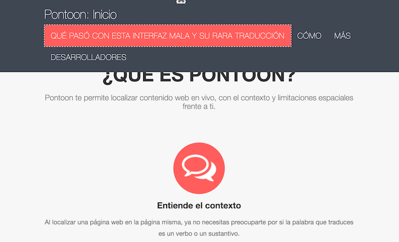
Mistranslation
Mistranslation occurs when meaning is lost between the source language and the target language. This can be caused accidentally by a lack of context for where a translation will be placed within a user interface (very common in software localization), a translator’s lack of subject matter expertise, or intentionally due to user interface text constraints (e.g., truncation).

Untranslated strings
Untranslated strings appear in a user interface when developers don’t include that string in the string resource files available for localization, but instead in their code. It’s a practice called hardcoding. The best way to correct this error is to make sure that Pontoon does not contain the string for translation (or that it’s not in the string resource files) and then contact developers using Bugzilla to make the string available for localization.

Style bugs
Mozilla’s official style guide serves as a primer to help communities create their own style guides. Style errors are when the tone or appearance of a translation does not match the tone or appearance described in a style guide. These can be corrected by making sure that localizers understand the style guide rules and follow them when translating.
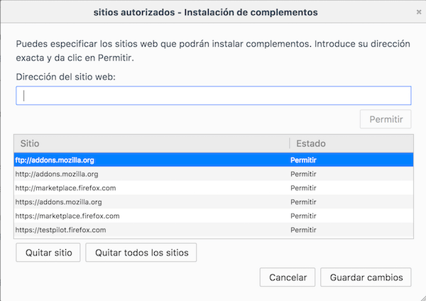
Numbers, date, currency
Every language and region displays numbers, dates, and currency differently. These errors occur when the user sees an incorrect number format, date format, or currency for the language and region of their localized Firefox. This can be fixed by filing a bug in Bugzilla.
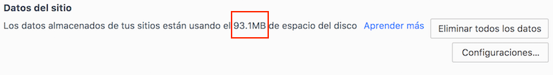
XML parsing errors
XML parsing errors (aka “the yellow screen of death”) cause Firefox to display a yellow error page. This is often due to a broken translated string in that localization of Firefox which causes the Firefox build to break. With Fluent, these errors will no longer be relevant.
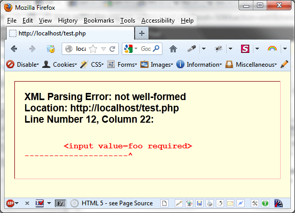
Exposed variables and placeholders
Variables and placeholders become exposed in the user interface when the translated string has a typo within the variable or placeholder. Because it is not exactly the variable that the software or website expected to find, the system simply displays the variable rather than its value. A very common example of this is with the variable &brandShortName. If that variable is typed correctly in the translation, it will return the variable’s value (in this case, it’s Firefox). If it contains a typo, the user will see the variable instead (e.g., &brandshortname). These are discoverable in the Mozilla localization dashboards and can be corrected in Pontoon.
Broken access keys
Access keys are less effective when the same key is assigned to multiple functions within the same scope (menu, preference panel, etc.). Additionally, if the access key uses a letter not available in the label, it’s displayed near the label between parentheses. Multiple identical access keys in the same context (preference menu, toolbar menu) will require the user to press the letter twice to use it. Ideally, repetitions should be avoided, but that’s not possible in some places, e.g. the reorganized preferences shipping with Firefox 56 and later.
It’s possible to see a list of access keys using letters not available in the associated label in your Firefox localization by looking at this page in Transvision for your locale.

Broken language preferences
Users experience broken website language preferences in Firefox when the accept-lang preferences are left unchanged from the en-US default set of language preferences. This can lead to the user receiving web pages in a language they’re unfamiliar with by default, even when the web page is localized into their native language. It can be fixed in toolkit/chrome/global/intl.properties in the accept-lang setting.
Broken searchplugins
Users experiencing a broken searchplugin will receive a “website unreachable” message when they attempt to perform a search from their awesome bar or search bar. If you discover that a searchplugin is broken, please file a bug with the l10n-drivers.
Broken hyperlinks
Broken hyperlinks occur in a couple of different ways:
- When there are typos in the hyperlink markup, the markup is then exposed to users.
- When the hyperlink links to a site that is not obvious by the text it’s linked to (e.g., linking to the wrong support article according to the link’s context). These can only be discovered by using the website or software regularly and clicking each hyperlink available to ensure that they take the user to the intended website.
What to do when you find an error while testing
Congratulations! You’ve found a bug! No software is perfect and you’re very likely to find bugs while you test your localization. Once you’ve found a bug, you can either attempt to find the affected string in your community’s Pontoon projects or you can file a bug in Bugzilla for that language in Mozilla Localizations :: [your_locale]. Once a fix for that bug is landed, it’s important to test again to be sure that the issue has been resolved.
For project-specific testing guides, please see these pages:
- Addons.mozilla.org (AMO).
- Firefox Desktop.
- Firefox for Android.
- Firefox for iOS.
- Mozilla.org.
- Snippets.
- Support.mozilla.org (SUMO).
Documentation for Mozilla localizers
Table of contents
Community
Products
How to localize and test Mozilla products:
Tools
Web Projects
Other topics
How to contribute to documentation
Please see the README file in our GitHub repository.
How to use Pontoon
This document covers how to work with Pontoon from the user’s perspective, and use it to localize Mozilla projects online. If you’re interested in administrating Pontoon, please read these documents.
- User accounts and settings.
- Teams and projects.
- Search and filters.
- Translation user interface.
- How to translate.
- Translation resources.
- Example workflow.
User accounts and settings
Creating an account
Pontoon currently uses Firefox Accounts to manage users, so you will need to create an account in order to log in.
To create an account on Pontoon, simply click on the Sign In button in the top right corner.

User settings
User settings can be accessed by clicking the user avatar in the top right corner, and selecting Settings.

Profile picture can be set or updated on Gravatar by clicking directly on the image.
In the Personal information section it’s possible to update the displayed name and change the email address used to log in to Pontoon.
It’s also possible to set the default homepage displayed when visiting Pontoon as a logged in user. Current options are:
- Default homepage (Localization page for the Pontoon Intro project).
- A Team page.

Both Translation Toolkit Checks and Make suggestions are checkboxes. In the picture above Translation Toolkit Checks is disabled while Make suggestions is enabled.
- Translation Toolkit Checks (check for number of sentences, placeholders, HTML tags, punctuation, etc.) are performed when saving a translation. For more information about quality checks see this document.
- Make suggestions allows a translator or a manager to submit suggestions instead of translations.
Both settings can also be changed directly from the gear menu (highlighted in orange) when translating strings. User settings are also accessible from this menu by selecting Change all settings.

Preferred locales can be used to display a specific group of locales before others in the LOCALES tab when translating strings (highlighted in red). In this case, the user chose to display fr and es-ES before other translations. Since they’re both available the tab displays 2+72, meaning 2 preferred locales plus all others.
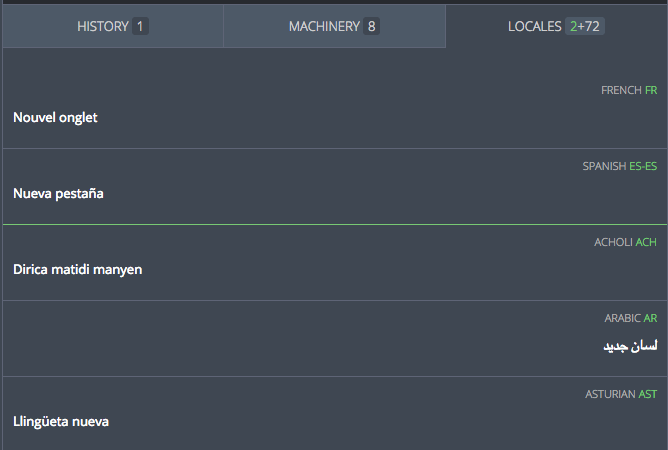
User roles
There are currently four user roles in Pontoon.
- Contributors can only submit suggestions. This is the default role for new users.
- Translators can submit translations directly in a specific locale, and review other contributors’ suggestions.
- Managers can perform the same actions as translators, but also manage other users and update their permissions.
- Admins can administrate Pontoon, e.g. adding or removing projects, and act as managers for all locales.
Managing permissions
A manager can upgrade other users’ permissions within a locale. To manage users, open the team page and select the PERMISSIONS tab (it will only be visible to managers and admins).
By default there’s only a General section: permissions defined here will apply to all projects, but can be overridden by custom project permissions.

To move a user to a different column simply hover the email address: arrows will appear to move the element to the left or right. Note that a user needs to log in at least once in Pontoon in order to upgrade their permission – simply having a Firefox Account is not sufficient.
Use the SAVE button to store the configuration before leaving this window.
By default, in the TEAM CONTRIBUTORS column will only appear users that have submitted suggestions before for this locale. You can click ALL USERS (highlighted in red) to display all existing users, then use the search field to narrow down the list.
By clicking ADD CUSTOM PERMISSIONS PER PROJECT (highlighted in orange), it’s possible to add specific permissions for a project. This can be useful to make sure that only some users can submit translations for a specific project, for example if it’s maintained by one person.

Note that it’s not possible to override managers, they will always be able to submit translations in any of the projects available for their locale.
Teams and projects
The Teams page lists all locales that are enabled in Pontoon. From here you can access a specific Team page, where you’ll get a list of all projects enabled for the requested locale. Selecting a project from the Team page will take you to what is called the Localization page.
From each locale’s Team page it’s also possible to request a project, that is asking to add that locale to a project already available in Pontoon, not asking to support localization for a brand new project.
The Projects page lists all projects that are available in Pontoon. From here you can access the list of locales that are enabled for the requested project. This is called a Project page in Pontoon. By selecting a locale in the Project page you access the Localization page.
There is also a special Localization page that allows to access all resources for all projects enabled for a specific locale: /locale/all-projects/all-resources.
The following diagram shows how these pages are organized and connected to each other:
Team page
You can access a team’s page by selecting it from the Teams page or by appending /YOUR_LOCALE_CODE to the URL, e.g. https://pontoon.mozilla.org/it for Italian.
This is a screenshot of the Italian team page:
The page header contains linguistic information about the current locale (plural form, writing direction, etc.), plus an indication of the overall status of completion and statistics. The statistics displayed in the rightmost column are active links to access the Localization page for all projects, for example to reach all missing strings across projects available for Italian in Pontoon.

There are 4 tabs available (highlighted in red), 5 if you’re an admin or manager:
- Projects: a list of all projects enabled in Pontoon for this locale.
- Contributors: a list of active contributors with their statistics, filterable by time (all time, 1/3/6/12 months).
- Bugs: a list of open bugs for this locale, retrieved from Bugzilla.
- Info: information about the team. Team managers can edit it by clicking on the Edit button.
- Permissions: manage user permissions (see this document for details).
Hovering a project in the list will replace the progress bar with a set of detailed statistics (untranslated strings, missing strings, etc.). Note that all these numbers are links, so you can use them to open the project with a filter already enabled, for example to display only missing strings. You can click on the number of total strings to access All Resources (i.e. all strings in all files) for this project.
The rightmost column in the table will display a blue lightbulb icon if there are unreviewed strings. The icon in the table header can be used to sort rows based on the number of unreviewed strings.

Requesting a project
It’s possible to request a project from a locale’s Team page.

Click on REQUEST MORE PROJECTS (highlighted in red), select the project you want to add and then click REQUEST NEW PROJECT (you need to select at least one project for the button to be displayed).

An email will be sent to Pontoon’s administrators, and the localization driver in charge of the project will act on the request. Please note that:
- Some projects have a closed list of supported locales, meaning that you can’t request the project on Pontoon.
- Some projects can be requested but eventually not enabled, because of practical restrictions related to the project itself (e.g. lack of support for the locale in iOS).
Project page
You can access a project’s page by selecting it from the Projects page.
This is a screenshot of the Mozilla.org project page:

The page header contains useful information about the current project:
- Priority: it goes from 5 stars (highest priority) to 1 star (lowest priority).
- Deadline: set only for some projects, it indicates when the translation is due.
- Repository: link to the repository storing translations for this project.
- Resources: links to useful external resources. Custom links can be defined for each project.
- Contact person: localization driver in charge of this project.
It also includes an indication of the overall status of completion and statistics across all enabled languages.

There can be up to 4 tabs available (highlighted in red):
- Teams: a list of all locales enabled in Pontoon for this project.
- Tags: a list of tags defined for this project. This tab will be visible only in projects where tags are enabled. For more information about tags, see this page.
- Contributors: a list of active contributors with their statistics, filterable by time (all time, 1/3/6/12 months).
- Info: information about this project.
Requesting a language
It’s possible to request an additional language for a project from its Project page.
Click on REQUEST NEW LANGUAGE (highlighted in red), select the language you want to add and then click REQUEST NEW LANGUAGE.
An email will be sent to Pontoon’s administrators, and the localization driver in charge of the project will act on the request. The same restrictions described in the Requesting a project section apply here.
Localization page
You can access a project’s Localization page in two ways:
- By selecting it from the Team page.
- By selecting it from the Project page.
The page header contains useful information about the current project (same as the Project page).
There are 4 tabs available (highlighted in red):
- Resources: files available in the project.
- Tags: a list of tags defined for this project. This tab will be visible only in projects where tags are enabled. For more information about tags, see this page.
- Contributors: a list of active contributors with their statistics, filterable by time. Unlike the tab available in the Team page, this only includes contributions to localization of the project for the current locale.
- Project info: information about the project.
- Team info: same content as the Info tab in the Team page.
Search and filters
Filters
String status
Strings in Pontoon can be filtered by their status. A string can be in one of the following status:
- Missing: string is not available in the localized file and doesn’t have any approved translations in Pontoon.
- Fuzzy: string is marked as fuzzy in the localized file.
- Translated: string has an approved translation.
- Unreviewed: string has been submitted – either to a string with an existing approved translation, or to a missing string – but not reviewed yet by translators. Note that, in both cases, the translation only exists within Pontoon database, it’s not saved to the localized file.
- Rejected: string has been reviewed and rejected by a translator.
- Warnings: string contains issues classified as warnings.
- Errors: string contains critical issues.
There are some extra criteria that can be used to filter strings:
- Untranslated: this will display strings that are missing (including those with unreviewed suggestions), fuzzy, or that contain errors. Once selected, you will also notice that those 3 individual filters are automatically checked.
- Unchanged: string is identical to the reference language (normally en-US).
By clicking on the funnel icon on the left, it’s possible to access filters.
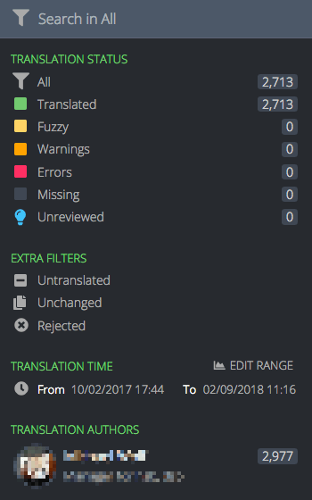
At this point it’s possible to:
- Click directly on the description of one of the filters. This will select and activate only this filter, and the search field placeholder will change accordingly. For example, clicking on Missing will show only missing strings, and the placeholder will read Search in Missing.
- Click on the icons for each filter, or the user avatars, in order to apply multiple filters. When you hover the icons, you will notice that they transform into checkmarks. A new button APPLY X FILTERS will appear at the bottom of the panel, where
Xis the number of active filters.
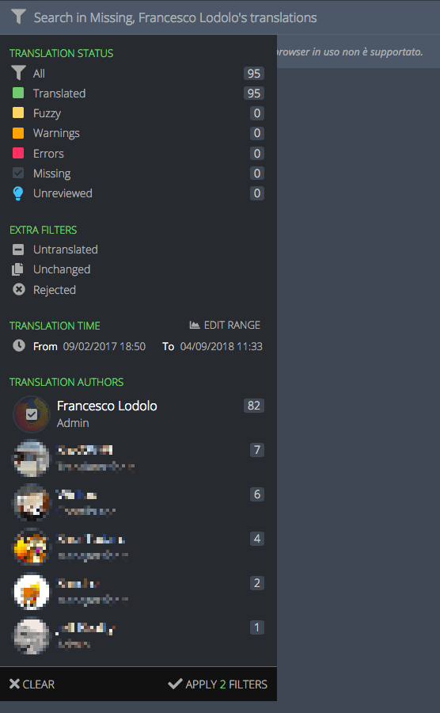
In this case 3 filters are selected.
To select a time range, you need to click EDIT RANGE, then either pick one of the defaults (30 days, 7 days, 24 hours, 60 minutes), or use the date picker (or slider) to adapt the range. Click on SAVE RANGE to store the range, then apply the filter.
Tags
For specific projects it’s also possible to filter strings based on tags. Tags are used to logically group resources based on their priority, allowing localizers to focus their work on important strings first, and project managers to better assess the overall localization status of the project.
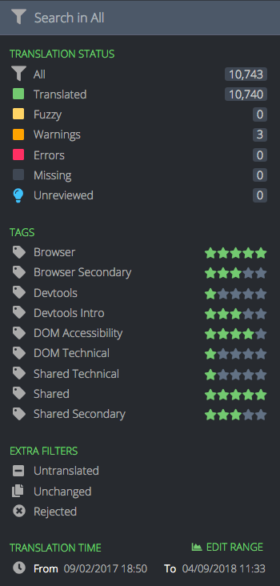
In this case, there are 3 tags defined for the project (highlighted in red). Near each tag there is a representation of the priority: like for projects, it goes from 5 stars (highest priority) to 1 star (lowest priority).
Search
It’s possible to search within a project using the search field. Searches include strings, string IDs and comments.

Note that searches take active filters into account, for example a search would be performed only on missing strings if that filter is selected.
Like in search engines, by default Pontoon will display matches that contain all the search terms. For example, searching for new tab will match both Open links in tabs instead of new windows and New Tab.
If you want to search for a perfect match, wrap the search terms in double quotes, e.g. "new tab". If, on the other hand, you want to search for strings that contain double quotes, you can escape them with a backslash, e.g. \".
Understanding Pontoon user interface
Pontoon translation workspace
Pontoon’s translation workspace features the list of strings in the left sidebar and the editing space on the right.
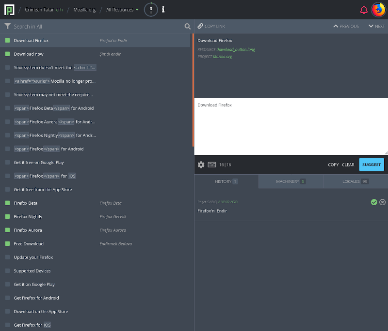
Main toolbar
The main toolbar allows you to navigate to the dashboards or to change the selected resource.
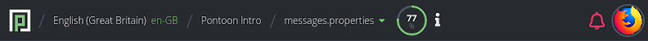
Clicking the locale name will take you to the Team page for that locale. Clicking the project name will take you to the Project page for that project and the selected locale.

If you click on the resource (or All Resources), you will see a list of all resources available for that project. You can search for a resource, and click one to load only the entities of that resource. You can also click All Resources to go back to seeing all resources, or All Projects to load entities for all projects under the selected locale.
More information on how pages are organized in Pontoon is available in this document.
An overview of the status of the selected resource is located to the right of the main toolbar. Translators can view the overview in detail by clicking it once.

A project information icon is located to the right of the string overview. Translators can view information regarding the project, its priority level, and testing by clicking the icon.
The notifications icon, represented by a bell, is located on the right side of the main toolbar. Translators will be notified of any important updates regarding the current project. By clicking the bell icon, translators can view notifications in more detail or see all active notifications.
The profile menu is located at the far right of the main toolbar. Clicking the profile image will reveal the drop-down menu. From this menu, translators can perform several actions, like navigate to their profile page, download and upload translations, etc. For information about uploading and downloading translation check this document, for Machinery see here.

Note that some profile menu items are restricted by user rights.
Sidebar
The sidebar displays the list of strings in the current project resource. Each string is displayed with the string status (i.e. Missing, Translated, etc.) identified by a colored square, the source string, and the approved translation or the most recent suggestion if available.

Color legend:
- **green **: string is translated.
- **yellow **: string is fuzzy.
- **orange **: string has warnings.
- **red **: string has errors.
- **gray **: string is missing.
At the top of the sidebar, the translator can access Pontoon’s search and string filters.
Note that the sidebar toggles between the strings and the editing space when using the in-context editor.
Translation workspace
The translation workspace is where strings are translated.

A translator can navigate sequentially by clicking the PREVIOUS or NEXT buttons located at the top of the workspace or by using keyboard shortcuts (ALT + arrow down or up).
In the upper section of the workspace, the translator can view the source string, any comments regarding the string, and the resource path where the string is located.
The editing space is located in the lower section of the workspace. The translator can edit the translation or suggestion in the text editor.
To the lower-right side of the workspace, the translator can COPY the source string to the editor, CLEAR the area where translations are typed, and SUGGEST or SAVE the translation by clicking the corresponding button. This area is also used to display warnings and errors when submitting a translation.
To the lower-left side, a translator can access the workspace settings, keyboard shortcuts, and view the number of characters in the target and source string.
By clicking the gear icon, the translator can activate or deactivate Translation Toolkit Checks or Make Suggestions and navigate to their user settings.

Note that access to certain settings may be restricted by user rights.
By clicking the keyboard, a translator can view the workspace keyboard shortcuts.

Note that a project could be enabled in read-only mode for some locales: their translations will be available to other languages in the LOCALES tab, but it won’t be possible to change or submit translations directly in Pontoon.
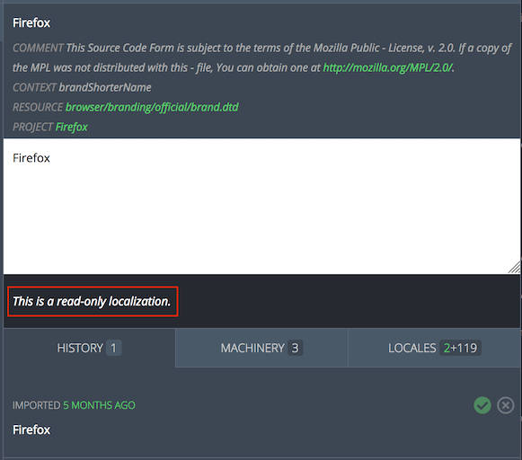
Fluent - FTL files
When working on FTL (Fluent) files, the editing space will look a bit different:
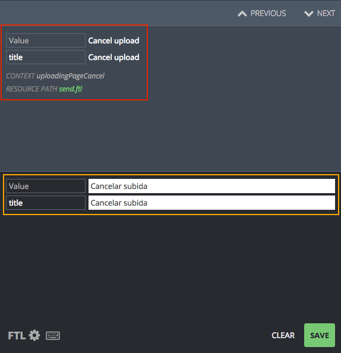
In the example above, the string has a value and an attribute title. Both are displayed in the source section (highlighted in red), and available as separate input fields in the editing area (highlighted in orange).
The following image is an example of a string with plurals: while English only has 2 forms, plural and singular, other locales can have a different number of plural forms. In this case, Russian has 3 forms (highlighted in orange).
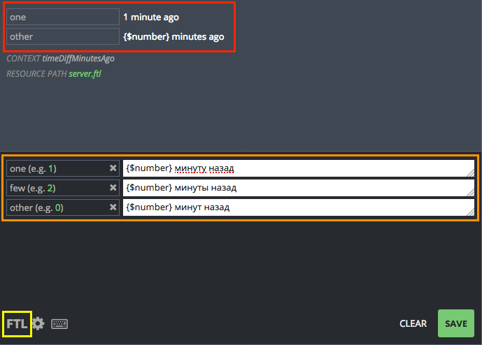
In the bottom left corner, the FTL button (highlighted in yellow) allows to switch between the standard UI (Simple FTL mode) and the Advanced FTL mode, where it’s possible to edit the original syntax directly, as you would in a text editor. For details on the Fluent syntax, see Fluent for localizers.

Note that the FTL button’s text is green when in Advanced FTL mode.
Pontoon workspace resources
Built-in translation resources are located below the editing space. The three integrated resources are HISTORY, MACHINERY, and LOCALES.

Learn how to use Pontoon’s translation resources in this document.
Pontoon in-context editor
Pontoon’s in-context editor displays the translatable strings as they appear on the web page, alongside the editing space. This means that translators can see where the source string appears and how the translation looks in real time. Pontoon’s in-context editor shows the strings in context on the right with the translation workbench on the left.

When using the in-context editor, the sidebar features both string navigation and the editing space. To view the editing space, double click on a string. To return to string navigation, click BACK TO LIST at the top-left of the sidebar.
How to translate
- Translating strings
- Quality checks
- Translating using the in-context editor
- Performing batch actions on strings
- Downloading and uploading translations
Translating strings
Four actions can be performed on strings: submit a suggestion, review a suggestion, delete a rejected suggestion, and submit a translation directly. Availability of these actions depends on user’s role.
This document is simplified to demonstrate translation modes in Pontoon. Documentation includes specific pages for learning how to use Pontoon’s interface and translation resources.
Submit a suggestion
When a translator is in Suggest Mode, or doesn’t have permissions to submit translations directly, a blue SUGGEST button will be visible in the lower-right side of the editing space.

To suggest a translation, the translator should simply input the translation to the editing space and click SUGGEST. Once the translator has suggested the translation, the suggestion will appear in the sidebar. In case of multiple suggestions, sidebar will show the most recent one.
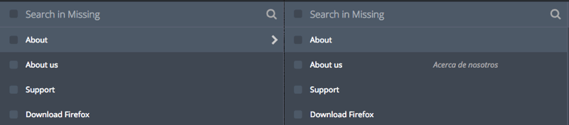
A notification will appear in the window, indicating that your translation has been saved.
Note that a suggested translation exists only in the Pontoon database, not in the localized file or translation memories.
Manually switch to suggestion mode
Even if a translator has permissions to add translations directly, submitting suggestions to be reviewed helps ensure quality. To manually switch to Suggestion Mode, click the Settings gear to the lower-left side of the editing space and click the icon to the left of Make Suggestions so that it becomes a green circle. The SUGGEST button should then appear to the lower-right side of the editing space.
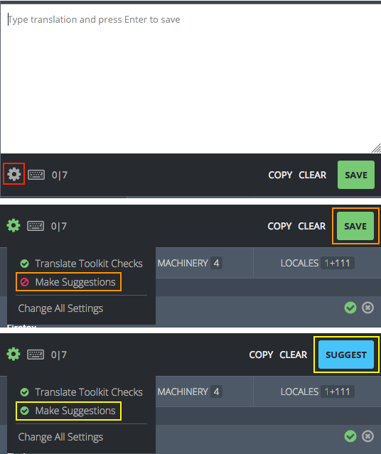
A notification will appear in the window, indicating that Make Suggestions has been enabled.
To switch to Review and Direct Translation Mode, go to the settings menu by clicking on the gear and turn off the Make Suggestions option. The green SAVE button should appear to the lower-right side of the editing space.
Review a suggestion
To review a suggestion, search for unreviewed strings in the sidebar.
If the suggested string is an acceptable translation, either click on the SAVE button to the lower-right side of the editing space, or click on the checkmark icon to the right of the string (it becomes green when hovered). This will transform the suggested string into an approved translation, save the string to the database and to the localized file on the next sync operation.
If the suggested string is not an acceptable translation, you can reject it by clicking the cross icon to the right of the string (it becomes red when hovered). After rejecting a suggestion, it’s also possible to delete it completely by clicking the trashcan icon.
Alternatively, you can provide a different suggestion: turn on Make Suggestions in settings. Once the SUGGEST button appears on the lower-right side of the editing space, edit the suggested string as appropriate and click SUGGEST. This will add your translation as a new suggested string in the Pontoon database but will not save the string in the localized file. To see the old and new suggestions, click on the history tab below the editing space. To learn about the history tab and other resources, check the Translation resources documentation.
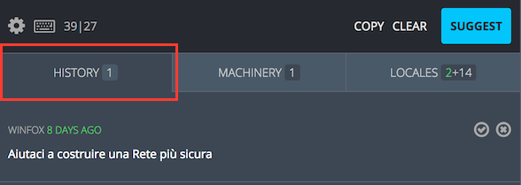
For more information about using the HISTORY tab, check this document.
Submit a translation directly
Note that it is always best practice to have a translation reviewed by another translator; however, if no reviewer is available, these instructions allow a translator to translate without review.
To submit a translation directly, search for and click on any string in the sidebar.
Ensure that the Make Suggestions option in settings is disabled. Then input the translation to the editing space and click SAVE. This will save your translation directly, without review, to the localized file.
Quality checks
When submitting a translation or suggestion, Pontoon performs automated quality checks. They are meant to help localizers identify issues with punctuation, capitalization, variables, etc. before translations are saved. Failures for these checks are stored in the database, and it’s possible to filter strings with issues from the search bar.
There are two types of quality check failures: errors and warnings.
Errors
Errors cover issues that would cause the string to be ignored, for example removed from Firefox builds or mozilla.org. For this reason, errors cannot be bypassed by localizers - the button to submit a translation is removed and the error needs to be fixed before the translation can be saved.
Examples include exceeding the maximum string length, errors related to variables and placeholders, incorrect number of plural forms in properties files, etc. Errors are denoted with a red circled X.

Errors are detected using the compare-locales library and Pontoon’s internal checks.
Warnings
Warnings, unlike errors, are displayed when it’s not possible to be completely sure that the string contains critical issues. For that reason, warnings can be bypassed by localizers, allowing them to save a translation anyway.
Examples include punctuation, number of sentences, capitalization, etc. Warnings are denoted with a grey circled X.
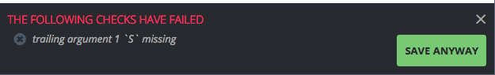
Warnings are detected using the compare-locales library and Translate Toolkit libraries.
Note: since Translate Toolkit checks may result in many false positives in some scenarios, they can be completely disabled.
Translating using the in-context editor
Note that only websites that have been enabled for in-context editing will display in context in Pontoon.
To translate in context, find the string you want to translate in the in-context view and double click it, or click on the pencil icon on the top-left of the string. Hovering over the string that you want to translate will highlight that string in the sidebar and in the in-context view.
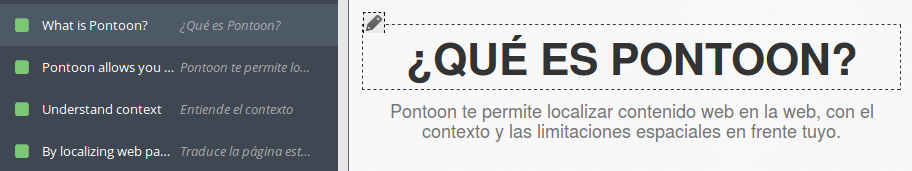
Once you double click a string, the sidebar will display the editing space.

Input your translation or review the suggestion and click SAVE or SUGGEST. Once your translation is saved, the editing space will move to the next string, and that string will be highlighted in the in-context view.
To return to the list of strings in the sidebar, click BACK TO LIST at the top-left of the sidebar.
Interactive website features will work in the in-context view. Some strings that you can see in the sidebar will not be visible in the in-context view until you activate the website feature. In the picture below, the translator has clicked on the hamburger to reveal a drop-down menu.

Performing batch actions on strings
Translators can perform mass actions on batches of strings by clicking on the square to the left of any string in the sidebar. When clicked, the square will show a checkmark and the editing space will show the mass action window.
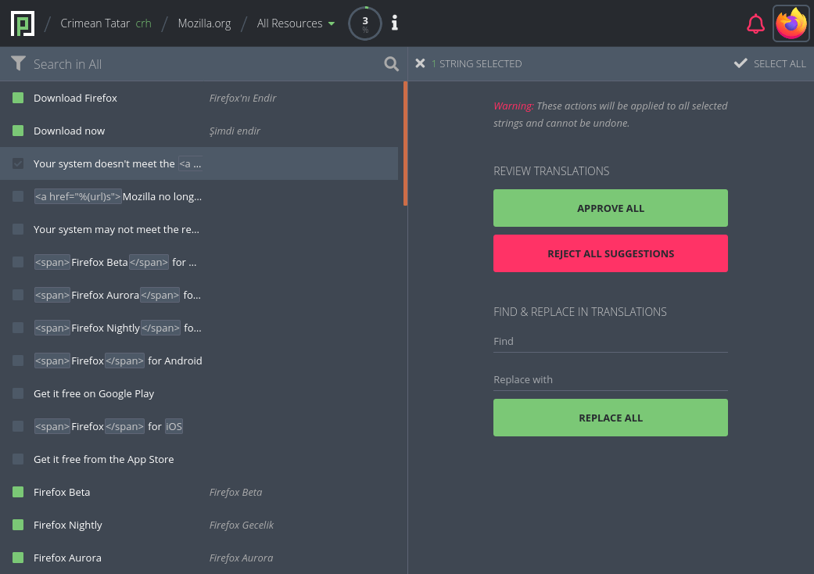
After selecting a string, it’s possible to hold SHIFT and click on another string to select a range of strings.
At the top-left of the mass action window, the translator can return to the editing space by clicking on the x icon. To the right of the exit icon, the number of strings currently selected is displayed. At the top-right of the mass action window, the translator can select all of the strings in the sidebar.
In the REVIEW TRANSLATIONS section, the translator can approve suggestions or reject suggestions for all selected strings. Upon clicking APPROVE ALL or REMOVE ALL SUGGESTIONS, the label of the button will be replaced with the number of affected translations.
In the REPLACE IN TRANSLATIONS section, the translator can input a series of characters to search for, and a series of characters to use as a replacement. This is a basic find and replace feature that will work only on the selected strings.
Note that mass actions are only available to users with translators rights.
Downloading and uploading translations
Pontoon features the ability to download and upload translations, including translation memories. To access these features, click on your user icon in the top-right section of Pontoon. Note that you must be in the translation workspace for the download/upload options to display in the dropdown menu.
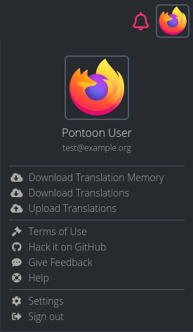
Anyone can download a translation memory (.tmx) and translations, while only translators can upload translations. When downloading translations:
- The resource currently selected is downloaded in its original format, it’s not converted in any way.
- If the project contains more than 10 files, download is performed file-by-file. For larger projects a ZIP of all files is downloaded.
When you upload translations to Pontoon:
- Existing strings with matching translations will be ignored.
- New strings and new translations will be imported and attributed to the user uploading the file.
Translation resources
Pontoon features built-in access to different translation memories. These resources are available in the translation workspace and, for machinery, on a standalone web page.
History tab
The history tab shows all of the suggestions and translations that have been submitted for the current source string.
In the tab, the number of available entries is visible alongside the HISTORY title. The history entries are located below the tab.

On the left side, above the entry, the name of the translator is visible in gray (linking to their profile), while in green it’s displayed how long ago the entry was submitted (full date and time is available as a tooltip). Below this information, the translation or suggestion is displayed.
To the right of the entry, icons indicate the state of each element:
- The green checkmark indicates that the translation has been approved.
- If both icons are gray, translation has been suggested but not reviewed yet.
- The red cross indicates that the translation has been rejected. The entire element will look opaque.
- The trashcan, available only for rejected translations, can be used to completely delete a translation.
If there are multiple suggestions for one string, it’s possible to use the SHOW DIFF link displayed on the right side of the suggestion: it will compare the selected suggestion to the first entry, highlighting in green all added text, in red all removed text. HIDE DIFF will display the original string.

Machinery tab
The Machinery tab shows possible translations from a variety of sources. These sources include:
- Pontoon’s internal translation memory.
- Microsoft Terminology.
- Google Translate.
In the tab, the number of available entries is visible alongside the MACHINERY title.

Below the tab, there is a machinery search bar (highlighted in red). A translator can enter text into the search bar to search for any strings in the machinery resources that may be similar. The search does not need to be related to the current project string.
Above the entry, a diff view between the current source string and the source string from the machinery resource is visible. Text highlighted in red indicates text that is present in the source string but not in the machinery string, while text highlighted in green indicates the opposite (text available only in the machinery string).
To the right of the entry, the number in green shows the percent match between the machinery string and the source string. The higher the percentage, the more likely the machinery is to be useful. The machinery source is listed in gray. Upon clicking the gray text, the machinery source will be opened in a new window. The green superscript to the right indicates the number of matches for the entry in the translation memory source.
Note that when using the machinery tab, entry source string may not match the project source string and translations may not be fluent under the context of the project string. Be aware of the meaning and purpose of each string when using the machinery tab.
Stand-alone Machinery
Pontoon machinery is also available as a stand-alone web page. To access the page, use the Machinery link available in the Profile menu, or the Machinery tab in the upper navigation displayed in some pages (e.g. Teams page or Projects page).
To use the machinery, select the target locale from the dropdown menu to the right of the searchbar. Then input the English source string into the searchbar and press enter. This will display all matching machinery entries. Information is organized exactly as in the translation workspace.
Locales tab
The locales tab shows approved translations from Pontoon projects in other locales.
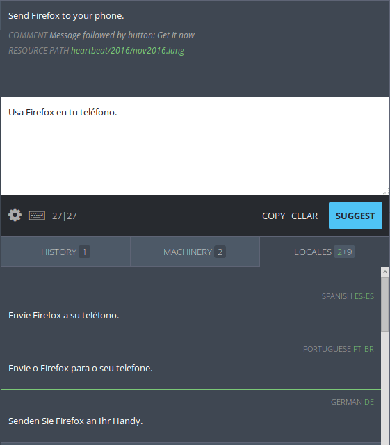
Next to the LOCALES title, the number of available entries is visible. The number of preferred locales is in green, all other locales are listed in gray.
To add a locale to the preferred locale list, access the user settings page.
Entries in the LOCALES tab above the green line are preferred locales. Entries below the green line are not preferred locales.
At the left of the entry, the translation for the source string in the selected locale is visible. At the right of the entry, the language name is visible in gray, while the locale code is displayed in green.
The LOCALES tab is useful for seeing what general style choices are made by other localization communities. When encountering a difficult string, a translator can reference the methods that have been used by other languages in making a stylistic decision.
Note that when using the LOCALES tab the translator should always opt for fluency in the working locale. Languages vary linguistically on many levels. The locales tab can be extremely useful, but should be used carefully, and rarely as the sole translation resource for translation.
Example workflow
AB workflow
This workflow utilizes the full power of Pontoon’s online translation features. It assumes that at least two translators are available for the project; however, this workflow can be completed by a single translator in an AA workflow performing each phase or by multiple translators in an ABCn workflow repeating Phase 3.
Phase 1: translation
Translator A
- Log in to Pontoon.
- Browse to the project.
- Using filters select
Untranslatedto display only the strings currently missing a translation, marked as fuzzy or containing errors. - Access personal settings by clicking on the gear icon in the upper right corner, under the user image, then turn on
Make suggestions.
Note that new volunteers who have not yet been granted Translator rights will haveMake suggestionsenabled by default. - For each string type a translation, then save it with the blue button
SUGGEST. The string will be recorded under theHISTORYtab. Each string submitted shows name of the author and saving time.
General notes:
- Rely on Pontoon’s translation resources to ensure consistency and make the translation process faster.
- If you’re using Firefox, make sure to have a dictionary installed for your language, and that spell checking is enabled in the translation text area.
Phase 2: review suggestions
Translator B
- Log in to Pontoon.
- Browse to the project.
- In filters select
Unreviewed, to isolate the strings previously suggested by another translator. - Review the suggested strings.
- If suggestion is acceptable, confirm it as an approved translation by clicking the green
SAVEbutton or the checkmark icon near the string in theHISTORYtab (it turns green when hovered). - If the suggestion is not acceptable:
- Reject the suggestion by clicking on the cross icon near the string (it turns red when hovered).
- Switch to Suggest mode. Edit the translation in the editing space and click the blue
SUGGESTbutton. Your version willnotoverwrite the translator’s work, but instead will appear at the top of the list under theHISTORYtab.
- If suggestion is acceptable, confirm it as an approved translation by clicking the green
Phase 3: implementing QA
Translator A
- In the project, select
Unreviewedfrom the filter search. Then compare your entries with those of your reviewer for changes. - Review the remaining strings:
- If you agree with the changes, confirm the reviewer’s version by clicking the green
SAVEbutton or the blue circle near the string in theHISTORYtab. If you have not been granted saving privileges yet, simply do nothing and pass to the next one. - If you would rather suggest an alternative, type it over, then hit the blue
SUGGESTbutton. Then resubmit it to the reviewer, back in Phase 2, step 4. - Reject suggestions that you don’t consider suitable.
- If you agree with the changes, confirm the reviewer’s version by clicking the green
Repeat, switching translators, until a consensus is reached.
Fluent for localizers
Fluent is a localization system, previously known as L20n, designed at Mozilla to unleash the expressive power of the natural language. The format used to describe translation resources used by Fluent is called FTL.
This section of documentation includes a brief introduction to Fluent’s syntax for localizers and covers specific details regarding Mozilla’s implementation (branding rules, additional functions available in Gecko, etc.). For a detailed overview of Fluent, consult the official documentation.
Introduction to Fluent syntax
Basic syntax
A Message represents the basic unit of translation in Fluent. This is the simplest form messages can take:
welcome-msg = Hello, World!
welcome-msg is the message identifier (or message ID), and Hello, World! is the value of this message.
Messages can contain variables, for example:
welcome-msg = Welcome { $user }
$user is the name of the variable, and should never be translated. The fragment included between curly braces is called a placeable, and can be moved within the text. For example, the message above would be translated in Italian as follows, leaving the placeable unchanged:
welcome-msg = Benvenuto { $user }
Messages can also reference other messages. In this case, the placeable won’t include the $ sign, simply the message identifier:
menu-settings = Settings
help-menu-settings = Click { menu-settings } to save the file.
A Term is a special category of Message:
- Terms have identifiers starting with a dash, e.g.
-brand-short-name. - They can’t be called directly in the source code, but only referenced within other messages.
- Each localization can add or remove attributes, regardless of the reference language (typically
en-US).
For example, a term is used to define the Firefox brand name. For more details, see this document.
-brand-short-name = Firefox
close-msg = Close { -brand-short-name }
Attributes
For a single HTML object there might be multiple messages to localize: for example, a button could have a label and an accesskey, a link could have a text but also a tooltip. Such objects can be localized defining multiple attributes within a single message. For example, in the case of a button:
login-button =
.label = Login
.accesskey = L
The message login-button doesn’t have a value, but has 2 attributes defined: label and accesskey. There are a few things to highlight in this FTL fragment:
- Attribute definitions must be indented and start with a period.
- There is an equal sign following the message identifier, even if there is no value (i.e. the value is Null).
- All attributes of messages found in the reference language – typically
en-US– must be present in the localization. This will be enforced by tools like compare-locales, which will warn on missing or obsolete (only available in the localization) attributes.
instructions-link = Log out
.tooltip = Disconnect from this account
In this case, instructions-link has a value (Log out) and a tooltip attribute (Disconnect from this account).
It’s important to note that, in FTL files, indentation is part of the syntax; indenting elements incorrectly will lead to parsing errors.
Selectors and plurals
With the select expression, a single message can provide several alternatives. The selected value will depend on the value of a variable, another message attribute, or a function.
The most common use of select expressions is for plural forms:
emails = { $unreadEmails ->
[one] You have one unread email.
*[other] You have { $unreadEmails } unread emails.
}
Notice that both the variants and the closing curly brace are indented. The same message can also be written as:
emails =
{ $unreadEmails ->
[one] You have one unread email.
*[other] You have { $unreadEmails } unread emails.
}
One of the variants starts with a *: that indicates the default option, and it must always be defined in a select expression. The part before -> is called the selector.
In this case, the message displayed will change based on the numeric value of $unreadEmails. For plurals, the variant key can either be a perfect match to a number or one of the CLDR plural categories. This allows to define special cases, beyond the number of plurals expected for a language:
emails = { $unreadEmails ->
[one] You have one unread email.
[42] You have { $unreadEmails } unread emails. So Long, and Thanks for All the Fish.
*[other] You have { $unreadEmails } unread emails.
}
Note how the [one] form in English doesn’t explicitly use the variable, in order to display the word one instead of the digit 1.
In plural messages is always possible to expose the number, even if the reference language doesn’t; the name of the variable is defined at the beginning of the select expression (in the selector), in this case $unreadEmails. The first example in this section can be translated in Italian using $unreadEmails in both forms:
emails = { $unreadEmails ->
[one] C’è { $unreadEmails } messaggio non letto.
*[other] Ci sono { $unreadEmails } messaggi non letti.
}
Terms and parameterized terms
As described at the beginning of the document, terms are a special type of messages. They are used to define translations of common words and phrases, which can then be used inside of other messages. They can be recognized because of the identifier starting with a dash, e.g. -brand-short-name. Terms can also define additional language-specific attributes which are not present in the reference language (typically en-US).
While in most cases terms will have a single value, it’s also possible to define multiple values associated controlled by a parameter. These parameterized values can be used to define grammatical cases or any other language-specific modifications of the value required by the grammar of the spelling rules. When referencing a term from another message, you can optionally specify a parameter and its value with the -term-identifier(parameter: "value") syntax.
Consider the following example in English:
-fxaccount-brand-name = Firefox Account
sync-signedout-account-title = Connect with a { -fxaccount-brand-name }
In Italian this can become:
-fxaccount-brand-name =
{ $capitalization ->
[lowercase] account Firefox
*[uppercase] Account Firefox
}
sync-signedout-account-title =
Connetti il tuo { -fxaccount-brand-name(capitalization: "lowercase") }
Similar to select expressions, you must define a default value, identified by *. Also notice that parameter names are arbitrary, and don’t need to be in English. To get the default value (uppercase in the example), the term can be called without any parameter ({ -fxaccount-brand-name } or { -fxaccount-brand-name() }).
Parameters can also be nested for more complex situations, for example:
-sync-brand-short-name =
{ $case ->
*[nom] { $capitalization ->
*[upper] Синхронізація
[lower] синхронізація
}
[gen] { $capitalization ->
*[upper] Синхронізації
[lower] синхронізації
}
[dat] { $capitalization ->
*[upper] Синхронізації
[lower] синхронізації
}
[acc] { $capitalization ->
*[upper] Синхронізацію
[lower] синхронізацію
}
[abl] { $capitalization ->
*[upper] Синхронізацією
[lower] синхронізацією
}
}
use-firefox-sync =
Підказка: При цьому використовуються окремі профілі. Скористайтеся
{ -sync-brand-short-name(case: "abl", capitalization: "lower") }
для обміну даними між ними.
Again, not all parameters need to be specified at all times when referencing a term. If some (or all) parameters are omitted, the corresponding default values will be used. In the example above, { -sync-brand-short-name(case: "abl") } will result in the uppercase Синхронізацією translation because upper is defined as the default value of the ablative case.
Functions
Functions can be used in Fluent to format data according to the current language’s rules, or can provide additional data to fine tune the translation.
Fluent includes some generic built-in functions, like NUMBER and DATETIME, for number and date formatting, respectively. Such functions can be used in placeables and selectors. For example:
dpi-ratio = Your DPI ratio is { NUMBER($ratio, minimumFractionDigits: 2) }
your-score = { NUMBER($score, minimumFractionDigits: 1) ->
[0.0] You scored zero points. What happened?
*[other] You scored { NUMBER($score, minimumFractionDigits: 1) } points.
}
This document describes additional functions available in Gecko products. Please refer to this document for references about the terminology used.
PLATFORM
PLATFORM is a function that allows localizers to tailor messages to the current platform. Allowed variant keys are: windows, macos, linux, android, other.
For example, Firefox settings are currently called Options in Windows, Preferences in macOS and Linux. Strings can be differentiated in Fluent by defining a message as follows:
pref-page =
.title = { PLATFORM() ->
[windows] Options
*[other] Preferences
}
PLATFORM() is used to determine the variant to use in the select expression, other is defined as default. If a variant isn’t defined, for example for linux, it will fall back to the default value.
The following example uses the PLATFORM() function for each attribute:
download-choose-folder =
.label =
{ PLATFORM() ->
[macos] Choose…
*[other] Browse…
}
.accesskey =
{ PLATFORM() ->
[macos] e
*[other] o
}
Brand names
Brand names, like Firefox or Sync, are stored as Terms in dedicated files, and shared across the application.
Unless indicated otherwise in comments, the current policy is that brand names can’t be:
- Declined to adapt to grammatical case.
- Transliterated.
- Translated.
They need to be kept in English, and sentences adapted as needed to fit the undeclined name.
For example, a term -brand-short-name is provided in browser/branding/official/brand.ftl
-brand-short-name = Firefox
And it can be referenced in other messages as follows:
close-msg = Do you want to close { -brand-short-name }?
-brand-short-name is defined as a term to allow localizers to define custom attributes, for example to store grammatical properties. Mozilla tools like compare-locales won’t report those attributes as obsolete if the reference language (en-US) doesn’t have them. Each language is then free to put information about genders, animacy, the first letter being a vowel or not, and any more into attributes of terms.
Here’s an example in English:
-brand-name = Firefox
has-been-updated = { -brand-name } has been updated.
And how Polish can adapt its translation depending on the gender of the brand. To understand this example, consider a scenario where -brand-name would be defined in a separate file, and could change depending on the version (e.g. Firefox vs Aurora).
-brand-name = Firefox
.gender = masculine
has-been-updated =
{ -brand-name.gender ->
[masculine] { -brand-name } został zaktualizowany.
[feminine] { -brand-name } została zaktualizowana.
[neuter] { -brand-name } zostało zaktualizowane.
*[other] Program { -brand-name } został zaktualizowany.
}
Bugzilla for localizers
Bugzilla is the system used to track issues for most of Mozilla’s projects. For this reason, every localizer should have an account on Bugzilla, and check incoming emails and notifications. Since bugs need to be read and understood by several people, including developers, English is the language commonly used in Bugzilla.
Bugs are filed in a Product, each product has multiple Components. For localization, there are two main products:
Mozilla Localizations: this product has several components, including one for each locale.www.mozilla.org: there is one specific component used for localization (L10N).
Bugzilla components are often referenced in the form of product :: component, e.g. Mozilla Localizations :: it / Italian or www.mozilla.org :: L10N. For some components, there is also a Locale field, that allows selecting one or more languages affected.
A bug has a status, the most common ones are:
- UNCONFIRMED: the bug was reported but it’s not confirmed yet. By default, a new user can only submit bugs as unconfirmed.
- NEW: the bug has been confirmed, but it still requires action.
- RESOLVED: the bug has been resolved.
When a bug is marked as RESOLVED, there is an additional information that describes the type of resolution:
- FIXED: the bug was fixed by a specific action.
- INVALID: the problem described is not a bug.
- WONTFIX: the problem described is a bug which will never be fixed.
- DUPLICATE: the problem is a duplicate of an existing bug.
- WORKSFORME: it wasn’t possible to reproduce the bug.
- INCOMPLETE: the bug doesn’t contain enough information to reproduce it, or a clear description of the issue.
When filing new bugs, the rule of thumb is:
- If the issue can be fixed by the localization team, e.g. it’s about a typo or mistranslation, it should be filed in
Mozilla Localizations :: Languageorwww.mozilla.org :: L10N. - If the issue needs work from a developer, e.g. a window is too narrow or a string is hardcoded, it’s a product bug, and should be filed accordingly. In case of doubt on which product or component to pick,
Firefox :: Untriagedis usually a good starting point for Firefox bugs. If you’re reporting a bug for a specific string, you should trace back that string to a bug, and file your report in the same product and component.
More information about Bugzilla are available in this guide.
Triage localization bugs
Each localization team should keep an eye on bugs filed for their languages. There are several ways to do it, the simplest one is to use the existing dashboards: both Pontoon and the Team page have Bugzilla sections showing open bugs filed against each locale.
Follow the Bugzilla component for your locale
The simplest way to keep your bugs under control is to follow your locale in Mozilla Localizations:
- Open your account preferences on Bugzilla.
- Select Component Watching in the left sidebar.
- In the right section, select Mozilla Localizations as product, then your locale in the Component list.
- Click Add.
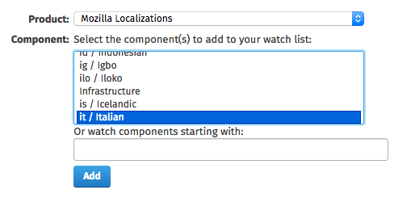
The product will appear in the section You are currently watching: right below. From this moment, you will receive an email for all bugs filed in – or moved to – that component.
There are a few limitations to this approach:
- It’s not possible to follow a single locale within a component, for example for
www.mozilla.org :: L10N. - By default, bugs marked as UNCONFIRMED won’t send any notification. In order to receive emails for unconfirmed bugs, you need to update the Email Preferences in your profile, removing the flag from the Component column in the line
The bug is in the UNCONFIRMED state.

Saved searches
In Bugzilla, it’s possible to perform searches, and save them as templates. For example, let’s create a search for bugs reported against Italian in www.mozilla.org :: L10N.
Start from the Advanced Search page:
- Leave the search field empty.
- Select
www.mozilla.orgas Product. - Select
L10Nas Component. - Expand the Custom Search section at the bottom, and set it to Locale + contains the string + it.

When the results appear, you can use the Remember search button and input field to save this search.

The list of your saved searches can be displayed by clicking in the search field at the top of the page: you simply need to click one of the items to perform the search.

At the bottom of the page displaying search results, there’s a link to delete the saved search just performed (Forget Search “NAME”).
Note that you can select multiple products and multiple statuses (including UNCONFIRMED) to refine or expand the search criteria.
Confirm and close bugs
As already explained, each locale should address the bugs reported for their language in a timely manner. Bugs filed as UNCONFIRMED should be triaged, marked as NEW if they’re actual bugs or closed, and marked as fixed once the problem is solved.
By default, users can’t confirm or close bugs filed by other users. In order to do that, you need a permission called editbugs, which is normally assigned to localizers only after they demonstrated a clear understanding of how Bugzilla works and its etiquette. The reason for this is that this permission is assigned across the entire Bugzilla, not on single products or components. If you need to upgrade your permissions, get in touch with l10n-drivers.
Documentation for Mercurial
How to identify the bug that introduced a string
Sometimes it’s helpful to identify which bug introduced a specific string, for example to check if an issue was already reported, or find out more information on a feature.
Find the string
The first step is to identify where the string is within the Mercurial repository, and the fastest way is to use Transvision.
For example, if you want to know which bug introduced the string Would you like to let this site start a server accessible to nearby devices and people?, you can search for the string or the identifier (if you already know it).
In the results, you can use the <source> link in the en-US column to open the file in Mercurial.
Note that Transvision will open the gecko-strings repository, not the source code repository. Starting from Firefox 57, all versions of Firefox desktop and Firefox for Android ship from a single localization repository (l10n-central). The repository containing the reference English strings, called gecko-strings, is generated from strings landing in the code repository for each branch (e.g. mozilla-central and comm-central for Nightly, mozilla-beta and comm-beta for Beta, etc.), and it’s exposed to localization tools like Pontoon and Transvision.
Find the bug
At the top of the page there’s an annotate link that will display the changeset associated to each line.
Now you only need to search in the page for the string, hover the link on the leftmost column, and open the bug (if an active link is available in the commit message), or select the changeset link in the popup. The commit message will always have a bug reference, and you can then check dependencies and comments.
Looking at older revisions
This method doesn’t always work: sometimes a changeset only moves strings around, so you would need to repeat the process for an older revision of the file.
At the top of the changeset, there’s a list of the modified files. Near each file there’s a revisions link.
At this point you can pick an older revision of the file by opening the diff link for the changeset you’re interested in, and repeat the process by selecting annotate near the file you’re analyzing.
If you want to look at the code using that string, you can also reach the original landing in the source code repository by using the link provided in the header X-Channel-Converted-Revision.
How to localize web projects
This set of documentation contains basic information on localizing and testing web based projects.
- Addons.mozilla.org (AMO).
- Developer.mozilla.org (MDN).
- Mozilla Donate website.
- Snippets.
- Support.mozilla.org (SUMO).
Addons.mozilla.org (AMO): how to localize and test
Product at a glance
AMO refers to https://addons.mozilla.org/. It is one of Mozilla’s biggest web properties, with 12 million users per month. The product consists of three key components that require localization:
- AMO server is the backend component of AMO.
- AMO frontend covers the top page of
about:addonsand the user-facing pages of addons.mozilla.org on Firefox for Android. - Discovery Pane is home of curated add-ons available on
about:addons.
Product updates are deployed every Thursday to production. Localizable strings can be extracted on Tuesdays, strings localized by 5pm UTC each Tuesday go live on Thursday. To report a problem, you can use GitHub issues.
Now let’s take a look of these components in greater details.
AMO and AMO frontend
addons-server
Addons-server is the default front-end for desktop users of AMO. It is also the API backend and home to the developer hub and reviewer tools.
addons-frontend
Addons-frontend is the default frontend for mobile user-agents, and it will eventually replace the addons-server frontend for user-pages.
Test the server and the frontend
The strings will be available on Dev or Staging server at different times. See this section for details.
- Dev: https://addons-dev.allizom.org/
- Staging: https://addons.allizom.org/
- Production: https://addons.mozilla.org/
The hosts for the new frontend are the same as addons-server, except to display the new frontend, you either need:
- Click View mobile site in the footer (this will set a
mamocookie with the valueonon your system). - A Mobile user-agent string.
Disco Pane app and editorial content
The AMO Frontend (addons-frontend) repository is also home to the Disco Pane, short for Discovery Pane. This is the site that contains curated add-ons available by typing about:addons in the address bar. Another way to reach it is by clicking Tools in the menu bar, select Add-ons in the dropdown menu, and click Get Add-ons on the left panel. While this looks like it’s part of Firefox, it’s actually a remote web page.
The content for the Disco Pane is available for translation in the AMO (addons-server) project.
Test the Discovery Pane
The strings will be available on Dev or Staging server depending on when they were committed. See this section for details.
The hosts for the Disco Pane are:
- Dev:
https://discovery.addons-dev.allizom.org/. - Staging:
https://discovery.addons.allizom.org/. - Production:
https://discovery.addons.mozilla.org/.
The actual link is automatically generated and depends on the locale, operative system and version of Firefox. To get the correct production link for your system, you can open the Browser Console from Tools > Web Developer, copy and paste this code snippet in the input area at the bottom of the window, and press enter:
Services.urlFormatter.formatURL(Services.prefs.getCharPref("extensions.webservice.discoverURL").replace("%COMPATIBILITY_MODE%", "normal"))
This code reads the preference extensions.webservice.discoverURL from about:config, and replaces placeholders with the correct data for your system. For example:
- The original value of
extensions.webservice.discoverURLishttps://discovery.addons.mozilla.org/%LOCALE%/firefox/discovery/pane/%VERSION%/%OS%/%COMPATIBILITY_MODE%. - If you’re using Firefox 57.0 in Italian on macOS, the resulting URL will be
https://discovery.addons.mozilla.org/it/firefox/discovery/pane/57.0a1/Darwin/normal. - To reach the Dev server, replace
addons.mozillain the domain withaddons-dev.allizom, resulting inhttps://discovery.addons-dev.allizom.org/it/firefox/discovery/pane/57.0a1/Darwin/normal.
Frequency of strings extraction and push schedule
Newly added strings are extracted every week after tagging, which happens at 9am PST on Tuesdays. The strings will be on the dev server and ready for localization.
For localized content:
- Dev server: once translations are committed into the repositories, they are visible on the dev server within 30 minutes (or as long as it takes to push the code).
- Staging server:
masteris tagged and pushed to staging weekly on Tuesday at around 9am PST. - Production: the push usually starts at 9am PST every Thursday.
Developer.mozilla.org (MDN): how to localize and test
MDN is the acronym for Mozilla Developer Network. It hosts references and guides to Web technologies as well as Firefox at Mozilla. It attracts users around the globe. The localization communities are a key part of the Mozilla project. Their work in translating and localizing the MDN documentations helps people around the world develop for the open Web.
MDN consists of three parts:
- The site user interface (or UI) strings that appear on almost all MDN pages to frame the main article content and provide navigation and user controls.
- The main body of MDN pages consists of references, guides, and tutorial articles. Localization is done directly on the web.
- Macro strings are the output by macro templates that construct certain kinds of navigation, messages, or generated structures. The strings currently live on GitHub, and changes can be done through pull requests.
This document only covers the UI portion localizable in Pontoon.
Localizing the strings
The UI strings for MDN product live in Pontoon. The string changes are extracted and sent to Pontoon as part of the production push process. You can translate directly in Pontoon or download it as .po files and upload them back to Pontoon when done. Newly localized strings will be included in production updates.
There is no sprint cycles. The staging and production sites are updated 1 - 3 times a week depending on product development. You should expect to see your new translations on production in 3-7 days.
Pontoon will be synced up with MDN repository every 20 minutes. Updating localization strings is preferably done in Pontoon, and not through pull requests in the repository.
Testing and reporting issues
Staging and production pushes take place at the same time. Localized sites will have English strings for a few days before localization is caught up. There is no public developer server at the moment.
Bugzilla is the best way to report localization issues.
Communication channels
- For live communication, use IRC channels: #mdndev or #mdn.
- MDN Discussion Forum has recently moved away from mailing list to Discourse. Though there is no l10n category, MDN category is for discussing topics related to the MDN site. If you have a question, you can post it in the general MDN category.
- If you want to be notified for string changes, one way is to check Pontoon project dashboard for pending task. Another way is by subscribing to the notification list: click the Watch icon on the top of MDN GitHub repository page and be notified about pull requests and code changes.
Mozilla Donate website: how to localize and test
donate.mozilla.org is our platform to collect donations. The main instance is for donations to the Mozilla Foundation, but there is also a separate instance for donations to Thunderbird.
Testing
Submitted translations are automatically deployed to the staging server, so you can test them a few minutes after they have been translated.
- Staging server: https://donate-wagtail.mofostaging.net/.
- Production server: https://donate.mozilla.org/.
Testing the payment flow
You may want to test the complete user journey on the website, but you don’t have to make an actual donation for that. Braintree (our payment processor for debit/credit cards) has a test mode that is enabled on the staging server only. Simply use the payment info from this page on the staging server and you should be able to simulate a payment. For instance, you can select an amount of money, click on donate by credit/debit card then fill out the form with the testing info. Make sure errors, as well as the page displayed when the donation has been successful, are properly localized.
Testing currency settings
The first thing to check is that the website supports all the relevant currencies for your locale.
You also want to make sure the default currency selected for your locale is the one that makes the most sense. Only one default currency can be set per locale and it’s not possible to rely on geolocation to determine the best one.
If your language is relevant in more than one country, make sure the other currencies are also available in the drop down.
Check that the currency formatting on the page is correct for your language. If it’s not correct, please file an issue.
How to report an issue
The preferred way is to file an issue on the donate.mozilla.org GitHub repository.
Snippets: localizing, testing and creating your own
What is a snippet?
A snippet is a small and often interesting piece of news, information or conversation. It is a type of in-product communications (IPC) channel that the Engagement team uses to deliver messages directly to Firefox users, to drive usage, inform about ongoing campaigns and initiatives, and build brand loyalty.
These are some examples of the subjects used in snippets: product launches, new features, Mozilla Foundation content like yearly donations, Mozilla Foundation Advocacy campaign, Mozilla content, user tips, celebration of special days, etc. In a given month, the team has the opportunity to create up to 3 billion media impressions through snippets. Mozilla uses them for all sorts of purposes, to educate, inform, celebrate and delight.
This is what a snippet looks like on Firefox browser:
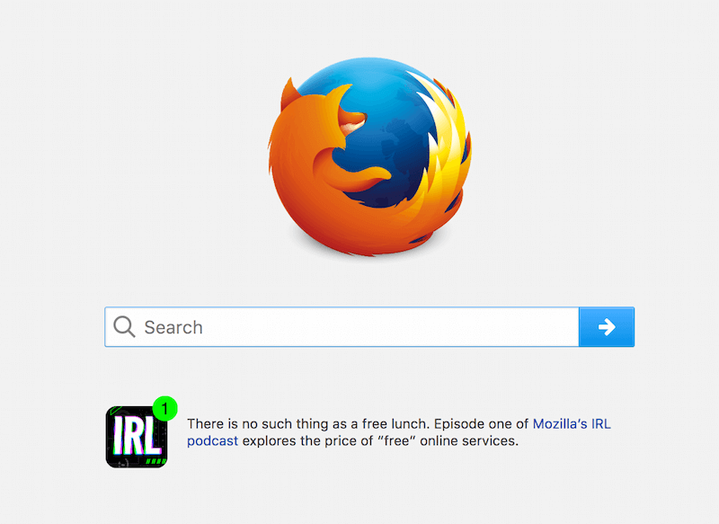
Which locales are supported?
Currently only eight locales are supported by the team on a regular basis. They are: cs, de, es, fr, id, pt-BR, ru and zh-TW. Recently, the team also tested out RTL languages: ar, fa, he and ur. The process is entirely manual, thus it is not scalable to expand to other locales, at least not on a regular basis. See section below on how to make a special request for locales not on this list.
How often are localized snippets requested and where is the project available?
Snippets usually come on a monthly basis. Normally there is a lead time of 10-14 days between the request and the snippets being available in Firefox. Occasionally there are special requests outside of this cadence to support a product or feature launch for a particular market.
Localizable files can be found on Pontoon under the Engagement project.
Guidelines on localizing snippets
- Follow the snippets guidelines when localizing snippets. The tone should be QUAC (Quick, Untamed, Alert, Clever).
- Do not translate it, localize it! Usually the English copy is full of cultural references that may not apply to your local culture and is targeted to the wrong audience. Try to capture the essence of the message and make it relevant to your market.
- Read the comments for some messages that provide info on context, type of campaign and length limitation of the message.
- Collaborate with other community members. You may come up with something better than working alone.
- Check for spelling and grammatical errors. Snippets have short life cycle. Get it right before it reaches millions of users.
- Do not rush to complete the work and then never look at it again. Think through for few days before you consider it final.
- Report localizability issues on Bugzilla during the localization process. Issues include but not limited to: icons, character length, cultural or country relevancy, appropriateness, timing when a snippet is used. The snippets team will evaluate these issues and skip a snippet for a locale at a given launch altogether.
- Check due date of the task. Snippets is high priority and time sensitive.
Where and when to test snippets?
Currently, there is no staging server for localizers to preview the snippets or layout before they are scheduled to go live.
Snippets usually go live as soon as a day after the due date, or as late as a few weeks later because they are scheduled against other priority messages.
To see snippets, type about:home in the Awesome Bar, the current running snippets will be on display. A snippet can run between 4-7 days. Sometimes a set of snippets rotates within a given time frame, in other cases one snippet runs for a few days before it is replaced by another one.
Take a peek of the currently running and scheduled snippets. It shows the country, the message and the schedule of a snippet.
If you spot a mistake in a snippet, file a bug to the team right away. Specify language, current content, suggested correction, severity of the problem or the reason it is incorrect. And preferably, attach a screenshot.
FAQ: process to make a special snippet request
Even if your locale is requested on a monthly basis, you are welcome to come up with your own content that better fits your culture, country or language.
If your language is not listed above and you would like to have a snippet created for special occasions, such as new product or feature launch, a major holiday or campaign, please follow these steps.
How to create a good snippet?
Leverage what is already written and localize it
If creating your own content is challenging, feel free to leverage what was created by the snippets team. Browse through the snippets written this year so far, you may find a message that resonates to your particular market, product, feature launch or campaign.
Create your own
Writing snippets takes a lot of effort. Follow the same guidelines that the snippets team adhere to.
Snippets should be to the point. Try writing your snippet then cut it down until you are left with a sentence that is quick, clever and delightful. A good snippet copy has a few of the following qualities and characteristics:
- Tangible: quality that can be easily measured.
- Length: the ideal snippet is between 80 and 130 characters. Think of a tweet, omit needless words.
- Readability: short concise words worked for Hemingway, they’ll work just fine for you. Keep the 3 syllable words and technical jargon to a minimum.
- Call to action - CTA (Occasional): you don’t always need to blatantly tell people what to do, but sometimes you do.
- Grammar: do your best to catch mistakes, there is a chance that all checkpoints will miss it but 100 million people surely won’t.
- Support graphic: all simple snippet copy is accompanied by an icon. Your icon and copy should work in unison. Select the icon from this gallery (need to request for access) that best supports the message. Here are some examples of matching the graphics with the tones of the messages.

-
Intangible: quality that is recognized but difficult to quantify.
- Quick: get to the point with short words and sentences.
- Clever: find humor, irony and wordplay. Reference modern life.
- Alert: ready to offer tips, advice and guidance like a trained concierge.
- Untamed: be quirky. Do and say things no other brand would.
In addition to the guidelines mentioned above in terms of localizing a snippet, it is very important that this is the result of a team collaborative effort. The proposed snippet should come in both target language and in English so the snippets team can understand what is being conveyed.
Try to submit multiple variant snippets of the same message, or multiple snippets of different messages if you can, to lower the chances of having some snippets rejected.
Can I use external icons and URLs in my snippet?
You can pull icons from the Firefox emoji bank by specifying the icon number. This is the recommended list of icons to choose from.
If you can’t find anything in the bank that fits, you can suggest icon ideas or even attach a custom icon that respects the guidelines. Suggesting new icons will increase review and approval time.
Unless specified, the only non-Mozilla pages we can link to from snippets are Wikipedia pages.
File a request
Once a snippet is formalized, you can file a Snippets bug request for review and approval. Specify the language, provide copy of the message in target language and in English as reference and choice of icon, suggest preferred timeline to run the snippet. Make sure to include a link to use in the proposed snippet.
What is the lead time for a snippet request?
The team needs a minimum of two weeks if snippet needs to appear in language other than English in your country. This assumes that the snippet doesn’t require much revision.
What is the typical snippet review cycle for approval?
Review process takes about a week. LCM (Life Cycle Management) team needs to approve the snippet before it moves to the Firefox stakeholders. The stakeholders could include functions from Firefox product, UX, creative, copywriter, etc.
How long does a snippet run?
A single snippet usually runs between 4 and 7 days. If you have a topic or campaign that lasts longer, please provide multiple snippet variations.
Can a community provide several snippets to run at a given time?
Yes, it can. It is always nice to have multiple snippets. Multiple snippets increase the chance of a few snippets being able to make it through the review process.
If several of our snippets are approved for a single language, how are they run?
Snippets of the same language usually cycle through during a given window. Normally a few snippets are running at any given time. Occasionally, one snippet is given 100% rotation for a short period in order to hit a goal. This usually applies to fundraising snippets or mobile promotion snippets.
Support.mozilla.org(SUMO): how to localize and test
SUMO, short for SUpport.MOzilla.org, is a knowledge base site, providing support to Mozilla product users. More than half of all Firefox users speak a language other than English. Mozilla depends on contributors to make support available to people around the globe.
SUMO consists of two parts:
- User interface (or UI), such as navigation and buttons.
- Support articles, either used to troubleshoot issue or as knowledge base for Mozilla products.
This document only covers the UI portion localizable in Pontoon.
Localizing the strings
There are two active components in Pontoon that make up the product:
LC_MESSAGES/djangojs.pocontains strings for the JS bits of the platform.LC_MESSAGES/django.pocontains the majority of strings in the SUMO product.
SUMO is made up by several file types. In order to minimize revision and get translation right the first time, the key is to get the context right. Look for clues or ask others for help:
- String comments: in Pontoon they’re displayed above the area where you can enter your translation for a string. They always include a reference to the code where the string is used, and you can use this information to search for context in the Kitsune GitHub repository.
- The SUMO l10n forum. But first thing first, you need to create a Firefox account in order to participate in the discussions in the forum.
Localized strings in Pontoon will be synced up with sumo-l10n on GitHub every 20 minutes, making the repository the source of truth.
Ignore these legacy components:
LC_MESSAGES/buddyup.pocontains strings for mobile-centric 1-to-1 support project.LC_MESSAGES/yaocho.pocontains strings for the mobile version of the support knowledge base.
Testing
On Wednesdays, SUMO developers extract new strings from code and database edits. These strings are merged into the sumo-l10n repository and become available in Pontoon for translation.
Translated strings from Pontoon are pushed automatically to the staging and production when there is a release to the respected environment. Usually this happens once a week.
There are three ways to test the product:
- Staging server: https://support.allizom.org.
- Production server: http://support.mozilla.org/.
Testing on production/staging
Localization updates are pushed to the staging and production environments usually once a week. More often for staging. Either way, the SUMO team relies on contributors to find issues and report bugs that are usually fixed at a timely manner.
FAQ
For any additional questions not covered here, you can contact Rubén.
How often are new strings added? Is there a sprint?
No, there are no sprints. Strings are added at as needed basis. Whenever a release or change is required, new strings will be added to both Pontoon and Kitsune on Mondays.
How do I participate in the SUMO l10n forum?
To be part of the SUMO community, you need to create a Firefox account, which allows you to write in the community l10n forum and localize SUMO articles. This is separate from the account used to log into Pontoon in order to localize SUMO product.
Are there email communications when new strings are added?
Only when there is a release or a major change will there be communications to localizers through mailing list (sumo-locale-leaders@), private messages, and the SUMO l10n forum. The Pontoon dashboard is the best way to check for pending tasks.
What are the ways to report an issue?
The best place to report issues is by filing bugs to SUMO. This is the quickest way to have a problem resolved.
Alternatively, you can report a problem through the SUMO l10n forum. You can also raise questions through web projects mailing list, in the #sumo channel on Discourse, and other social channels. In the end, issues identified will be tracked through Bugzilla.
It is not recommended to file issues on GitHub sumo-l10n.
Glossary
Fuzzy
fuzzy is an internal state available only if the source file is a gettext (.po) file. A string can be marked as such in a few cases:
- The reference text changed after the string was already translated.
- The string has been manually marked by translators because it needs review.
- New strings were merged in the localized files, enabling the option to match existing translations (also called “fuzzy matching”).
In all these cases a translation exists in the file, but is marked as fuzzy (equivalent to “need review”) and not used by the website or application. For more information, read the documentation about Fuzzy Entries in gettext.
Using l10n resources while translating
What are l10n resources
L10n resources are used to ensure consistency of translation and localization at specific levels of a document or set of documents. These levels are:
- Word or phrase level (terminology).
- Sentence or string level (translation memory).
- Whole document or project level (style guides).
Terminology
Terminology resources define specific words or phrases and their translated equivalents to be used in the translation process. These resources often go beyond providing one-to-one bilingual equivalents. They can include metadata about a particular term, including a monolingual definition, part of speech, context, images, and other relevant metadata that helps the translator understand the concept behind the term. A term belongs in the approved term base (terminology database) when it appears regularly, has a singular meaning in a particular context, or is specialized in nature.
Term bases are useful in helping translators to maintain meaning and consistent terms across multiple projects. They’re especially useful in collaborative translation environments that involve multiple projects with similar content and audiences. Term bases also help to ensure that any new collaborators can translate effectively in a shorter period of time.
Using term bases ensures that a user’s experience is consistent across platforms, products, and content types. For example, terminology used in the Firefox desktop UI also appears in Firefox for Android, Firefox for iOS, and SUMO documentation. If a user encounters a problem in Firefox, they will expect to find a solution by searching SUMO with the text from the Firefox desktop user interface. Consistent terminology use ensures a holistically consistent user experience for such cases.
Translation memory
Translation memory is a mechanism that reuses previously translated segments (i.e., strings, sentences, etc.). These segments are stored in a database as a key-value pair, with the source language segment as key and the target language segment as its value. Algorithms like the Levenshtein Distance are then used to compare an untranslated segment to the database of source language segments. If there’s a perfect match, the target language segment is returned for the translator to reuse. If there are partial matches (i.e., fuzzy match), they are returned as suggestions. Translators can then post-edit the closest matching suggestion without needing to repeat fully translating the segment.
Translation memory is useful in helping translators to translate more in a shorter amount of time. For example, it allows source content authors to make regular updates to source content without causing translators to treat these updates as untranslated segments. As with term bases, translation memory also ensures consistency between similar projects and collaborative translation projects with rotating contributors.
Style guides
Style guides establish the norms for translating a full document or project. It establishes norms for many of the following topics:
- Style.
- Tone.
- Grammar and spelling resources.
- Instructions on handling cultural references.
- Word forms (e.g., plurals, abbreviations).
- Language and culture-specific units (e.g., dates, numerals, currency).
- Criteria for identifying “Do-Not-Translate” content in a project.
Style guides help translators to know to address their audience (or users) in the target language when translating. They ensure consistency between translators in all of the above-mentioned topics. In a collaborative translation environment, they serve as the standard against which peers can review and correct translations from both new and old translators.
When are they used in the l10n process
Term bases and translation memory are best used within the translation environment (e.g., Pontoon). These computer-assisted translation (CAT) tools are designed to make use of these resources as a translator is in the process of translating a project.
Style guides are used primarily as a point of reference. A new translator should always begin their contributions by studying the style guide and refer back to it regularly while translating when they have questions. Reviewers use style guides to ensure that new translations meet the quality standards established in the style guide.
Guide to promoting Firefox in your language - a community marketing kit
For every community, new or well established, it is always exciting to reach the milestone when the localized Firefox is ready for the first time or a major release. It takes months of translation, testing and QA to get to the finish line. However, the work is not done. Now comes the challenge of promoting the product in your language and sharing it by word of mouth. This guide is created to support a major launch event, not only for a new Firefox launch, it also addresses some of the most frequently asked questions about promoting your localized Firefox and other Mozilla products.
Messages
Source
- mozilla.org! Localize it! The site is having a makeover leading up to the autumn launch of the new Firefox. In addition to the new look and feel, there is a lot of new content, and tone is less formal and more fun. Translate these new pages, you will have all your key messages already.
- Snippets and emails: Only eight locales are supported on a regular basis. The Snippets team is not ready to expand to more locales due to the fragile and manual process for pushing them live. You can leverage the content you see fit and publish them on your community social channels. We are in discussion with the Snippets team to support occasional request for locales not regularly supported. Check Snippets documentation for details.
- Other marketing messages: Occasionally we come across interesting messages through Mozilla social channels. The l10n drivers will share them through familiar communication channels such as Facebook, Telegram, and Twitter.
Key messages of the new Firefox:
- Firefox is fast, modern, and fun.
- Differentiators between Firefox and the competitors.
- Big vs. small
- Bloated vs. lean
- Being watched vs. having more privacy
- Ads vs. content
Targeted audience - attract, inform and convert
- Switch English user to target language
- Conscious choosers - users who are brand loyal
- New and non-users - users who are new to Firefox
- High value users - users who choose products and service that represent their values
- Lapsed users - users who have not used Firefox for a while because of its perceived image and performance
Graphic Assets
Guidelines and downloadable [designlanguage.mozilla.org]
With the new logo and the new look, we now have a new brand guideline at a new home. If you have resources to create your own printable file, make sure to read the guideline on the DOs and DONTs and adhere to the guidelines and suggestions closely.
Designs
If you do not have resources in tools or talents to create your own images, you can do two things:
- Check to see if what you need is already available at OpenDesign github repository. We will add more images and templates over time.
- Click through some of the open and closed issues to see the kind of work the team has covered.
- If you don’t find what you need or you want to have a customized one, here are the steps:
- File an issue to the OpenDesign team
- Specify your need: image, logo, with text, with localized text, your purpose.
- Specify size and color.
- State the deadline.
- The team delivers the finished work to you after a few iterations.
Spreading the words
Here are a few channels to spread the words of the new Firefox launch. The following are mere suggestions. They may or may not be applicable or appropriate for every market.
- Social media: Instagram, Facebook, Twitter, Blogs, major local brand social media.
- Community: organize meetup, attend other tech meetups, be a speaker.
- Organization: team up with other tech non-profit or open source organizations, schools, universities, and libraries to discuss web or tech literacy; bulletin board.
- Mozilla: Mozillagram will share photos from events. Below is the process to get your photos published:
- Email request a week in advance to Sierra Read, in charge of social media. Once the community lead is granted access, the person or the group is allowed to take over the account for a few days at a time. During this period, they have direct access and are responsible for posting.
- With advance planning, Snippets team will push localized snippets outside of the regularly supported locales. Check out the process in getting one published.
- Mozilla l10n blog, monthly report.
Guidelines to organizing events
Large events are often difficult to organize, expensive, and less effective at spreading the word. Here are a few things to keep in mind when organizing a local event:
- To organize an event, reach out to your local Reps. The Reps are experienced in organizing events, especially the logistics.
- To fund the event, send request to the l10n team in advance. The l10n-drivers will evaluate and potentially set aside a small budget for it.
- For new locale launch, in addition to the above steps:
- L10n-drivers will send gear (pens, stickers) to distribute for the events.
- L10n-drivers will send t-shirts to the community localizers.